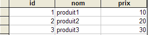
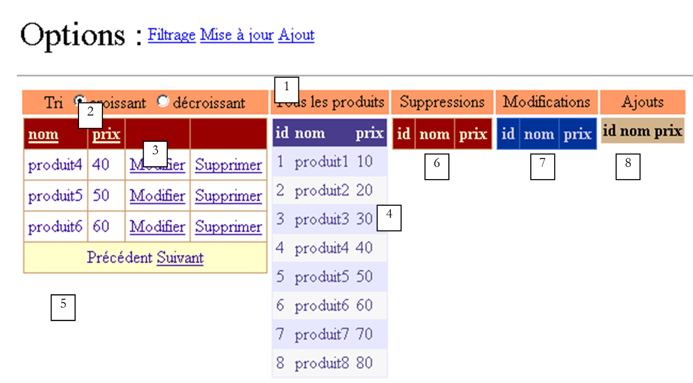
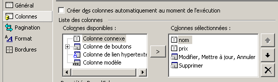
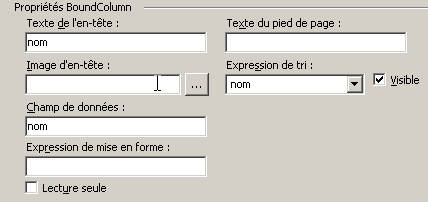
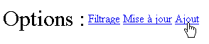
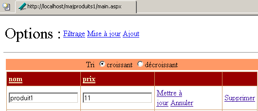
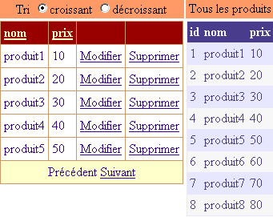
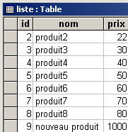

9. Composants serveur ASP - 3
9.1. Introduction
Nous continuons notre travail sur l'interface utilisateur en approfondissant les capacités des composants [DataList], [DataGrid], notamment dans le domaine de la mise à jour des données qu'ils affichent
9.2. Gérer les événements associés aux données des composants à liaison de données
9.2.1. L'exemple
Considérons la page suivante :
 |
La page comprend trois composants associés à une liste de données :
- un composant [DataList] nommé [DataList1]
- un composant [DataGrid] nommé [DataGrid1]
- un composant [Repeater] nommé [Repeater1]
La liste de données associée est le tableau {"zéro","un","deux","trois"}. A chacune de ces données est associé un groupe de deux boutons libellés [Infos1] et [Infos2]. L'utilisateur clique sur l'un des boutons et un texte affiche le nom du bouton cliqué. On cherche à montrer ici comment gérer une liste de boutons ou de liens.
9.2.2. La configuration des composants
Le composant [DataList1] est configuré de la façon suivante :
<asp:datalist id="DataList1" ... runat="server">
<SelectedItemStyle ...</SelectedItemStyle>
<HeaderTemplate>
[début]
</HeaderTemplate>
<FooterTemplate>
[fin]
</FooterTemplate>
<ItemStyle ...></ItemStyle>
<ItemTemplate>
<P><%# Container.DataItem %>
<asp:Button runat="server" Text="Infos1" CommandName="infos1"></asp:Button>
<asp:Button runat="server" Text="Infos2" CommandName="infos2"></asp:Button></P>
</ItemTemplate>
<FooterStyle ...></FooterStyle>
<HeaderStyle ...></HeaderStyle>
</asp:datalist>
Nous avons omis tout ce qui correspondait à l'apparence du [DataList] pour ne s'intéresser qu'à son contenu :
- la section <HeaderTemplate> définit l'en-tête du [DataList] et la section <FooterTemplate> son pied-de-page.
- la section <ItemTemplate> est le modèle d'affichage utilisé pour chacune des données de la liste de données associée. On y trouve les éléments suivants :
- la valeur de la donnée courante de la iste des données associée au composant : <%# Container.DataItem %>
- deux boutons libellés respectivement [Infos1] et [Infos2]. La classe [Button] a un attribut [CommandName] qui est utilisé ici. Il va nous permettre de déterminer quel est le bouton à l'origine d'un événement dans le [DataList]. Pour gérer le clic sur les boutons, on n'aura qu'un seul gestionnaire d'événement qui sera lié au [DataList] lui-même et non aux boutons. Ce gestionnaire recevra une information lui indiquant sur quelle ligne du [DataList] s'est produit le clic. L'attribut [CommandName] nous permettra de savoir sur quel bouton de la ligne il s'est produit.
Le composant [Repeater1] est configuré de façon très analogue :
<asp:repeater id="Repeater1" runat="server">
<HeaderTemplate>
[début]<hr />
</HeaderTemplate>
<FooterTemplate>
<hr />
[fin]
</FooterTemplate>
<SeparatorTemplate>
<hr />
</SeparatorTemplate>
<ItemTemplate>
<%# Container.DataItem %>
<asp:Button runat="server" Text="Infos1" CommandName="infos1"></asp:Button>
<asp:Button runat="server" Text="Infos2" CommandName="infos2"></asp:Button></P>
</ItemTemplate>
</asp:repeater>
On a simplement ajouté une section <SeparatorTemplate> pour que les données successives affichées par le composant soient séparées par une barre horizontale.
Enfin, le composant [DataGrid1] est configuré comme suit :
<asp:datagrid id="DataGrid1" ... runat="server" PageSize="2" AllowPaging="True">
<SelectedItemStyle ...></SelectedItemStyle>
<AlternatingItemStyle ...></AlternatingItemStyle>
<ItemStyle ...></ItemStyle>
<HeaderStyle ...></HeaderStyle>
<FooterStyle ....></FooterStyle>
<Columns>
<asp:ButtonColumn Text="Infos1" ButtonType="PushButton" CommandName="Infos1">
</asp:ButtonColumn>
<asp:ButtonColumn Text="Infos2" ButtonType="PushButton" CommandName="Infos2">
</asp:ButtonColumn>
</Columns>
<PagerStyle .... Mode="NumericPages"></PagerStyle>
</asp:datagrid>
Là également, nous avons omis les informations de style (couleurs, largeurs, ...). Nous sommes en mode de génération automatique des colonnes qui est le mode par défaut du [DataGrid]. Cela signifie qu'il y aura autant de colonnes qu'il y en a dans la source de données. Ici, il y en a une. Nous avons ajouté deux autres colonnes balisées par <asp:ButtonColumn>. Nous y définissons des informations analogues à celles définies pour les deux autres composants ainsi que le type de bouton, ici [PushButton]. Le type par défaut est [LinkButton], c.a.d. un lien. Par ailleurs, les données seront paginées [AllowPaging=true] avec une taille de page de deux éléments [PageSize=2].
9.2.3. Le code de présentation de la page
Le code de présentation de notre page exemple a été placé dans un fichier [main.aspx] :
<%@ page codebehind="main.aspx.vb" inherits="vs.main" autoeventwireup="false" %>
<HTML>
<HEAD>
</HEAD>
<body>
<form runat="server">
<P>Gestion d'événements de composants associés à des listes de données</P>
<HR width="100%" SIZE="1">
<table cellSpacing="1" cellPadding="1" bgColor="#ffcc00" border="1">
<tr>
<td ...>DataList</td>
<td ...>DataGrid</td>
<td ...>Repeater</td>
</tr>
<tr>
<td ...>
<asp:datalist id="DataList1" ... runat="server">
<HeaderTemplate>
[début]
</HeaderTemplate>
<FooterTemplate>
[fin]
</FooterTemplate>
<ItemStyle ...></ItemStyle>
<ItemTemplate>
<P><%# Container.DataItem %>
<asp:Button runat="server" Text="Infos1" CommandName="infos1"></asp:Button>
<asp:Button runat="server" Text="Infos2" CommandName="infos2"></asp:Button></P>
</ItemTemplate>
<FooterStyle ...></FooterStyle>
<HeaderStyle ....></HeaderStyle>
</asp:datalist>
<P></P>
</td>
<td ...>
<asp:datagrid id="DataGrid1" ... runat="server" PageSize="2" AllowPaging="True">
<AlternatingItemStyle ...></AlternatingItemStyle>
<ItemStyle ...></ItemStyle>
<HeaderStyle ...></HeaderStyle>
<FooterStyle ...></FooterStyle>
<Columns>
<asp:ButtonColumn Text="Infos1" ButtonType="PushButton" CommandName="Infos1">
</asp:ButtonColumn>
<asp:ButtonColumn Text="Infos2" ButtonType="PushButton" CommandName="Infos2">
</asp:ButtonColumn>
</Columns>
<PagerStyle ... Mode="NumericPages"></PagerStyle>
</asp:datagrid>
</td>
<td ...>
<asp:repeater id="Repeater1" runat="server">
<HeaderTemplate>
[début]<hr />
</HeaderTemplate>
<FooterTemplate>
<hr />
[fin]
</FooterTemplate>
<SeparatorTemplate>
<hr />
</SeparatorTemplate>
<ItemTemplate>
<%# Container.DataItem %>
<asp:Button runat="server" Text="Infos1" CommandName="infos1"></asp:Button>
<asp:Button runat="server" Text="Infos2" CommandName="infos2"></asp:Button></P>
</ItemTemplate>
</asp:repeater>
</td>
</tr>
</table>
<P><asp:label id="lblInfo" runat="server"></asp:label></P>
<P></P>
</form>
</body>
</HTML>
Dans le code ci-dessus, nous avons omis le code de mise en forme (couleurs, lignes, tailles, ...)
9.2.4. Le code de contrôle de la page
La code de contrôle de l'application a été placé dans le fichier [main.aspx.vb] :
Public Class main
Inherits System.Web.UI.Page
' composants page
Protected WithEvents DataList1 As System.Web.UI.WebControls.DataList
Protected WithEvents lblInfo As System.Web.UI.WebControls.Label
Protected WithEvents DataGrid1 As System.Web.UI.WebControls.DataGrid
Protected WithEvents Repeater1 As System.Web.UI.WebControls.Repeater
' la source de données
Protected textes() As String = {"zéro", "un", "deux", "trois"}
Private Sub Page_Load(ByVal sender As System.Object, ByVal e As System.EventArgs) Handles MyBase.Load
If Not IsPostBack Then
'liaisons avec source de données
DataList1.DataSource = textes
DataGrid1.DataSource = textes
Repeater1.DataSource = textes
Page.DataBind()
End If
End Sub
Private Sub DataList1_ItemCommand(ByVal source As Object, ByVal e As System.Web.UI.WebControls.DataListCommandEventArgs) Handles DataList1.ItemCommand
' un évt s'est produit sur une des lignes du [datalist]
lblInfo.Text = "Vous avez cliqué sur le bouton [" + e.CommandName + "] de l'élément [" + e.Item.ItemIndex.ToString + "] du composant [DataList]"
End Sub
Private Sub Repeater1_ItemCommand(ByVal source As Object, ByVal e As System.Web.UI.WebControls.RepeaterCommandEventArgs) Handles Repeater1.ItemCommand
' un évt s'est produit sur une des lignes du [repeater]
lblInfo.Text = "Vous avez cliqué sur le bouton [" + e.CommandName + "] de l'élément [" + e.Item.ItemIndex.ToString + "] du composant [Repeater]"
End Sub
Private Sub DataGrid1_ItemCommand(ByVal source As Object, ByVal e As System.Web.UI.WebControls.DataGridCommandEventArgs) Handles DataGrid1.ItemCommand
' un évt s'est produit sur une des lignes du [datagrid]
lblInfo.Text = "Vous avez cliqué sur le bouton [" + e.CommandName + "] de l'élément [" + e.Item.ItemIndex.ToString + "] de la page [" + DataGrid1.CurrentPageIndex.ToString() + "] du composant [DataGrid]"
End Sub
Private Sub DataGrid1_PageIndexChanged(ByVal source As Object, ByVal e As System.Web.UI.WebControls.DataGridPageChangedEventArgs) Handles DataGrid1.PageIndexChanged
' chgt de page
With DataGrid1
.CurrentPageIndex = e.NewPageIndex
.DataSource = textes
.DataBind()
End With
End Sub
End Class
Commentaires :
- la source de données [textes] est un simple tableau de chaînes de caractères. Elle sera liée aux trois composants présents sur la page
- cette liaison est faite dans la procédure [Page_Load] lors de la première requête. Pour les requêtes suivantes, les trois composants retrouveront leurs valeurs par le mécanisme du [VIEW_STATE].
- les trois composants ont un gestionnaire pour l'événement [ItemCommand]. Celui-ci se produit lorsqu'un bouton ou un lien est cliqué dans l'une des lignes du composant. Le gestionnaire reçoit deux informations :
- source : la référence de l'objet (bouton ou lien) à l'origine de l'événement
- a : information sur l'événement de type [DataListCommandEventArgs], [RepeaterCommandEventArgs], [DataGridCommandEventArgs] selon les cas. L'argument a apporte diverses informations avec lui. Ici, deux d'entre-elles nous intéressent :
- a.Item : représente la ligne sur laquelle s'est produit l'événement, de type [DataListItem], [DataGridItem] ou [RepeaterItem]. Quelque soit le type exact, l'élément [Item] a un attribut [ItemIndex] indiquant le numéro de la ligne [Item] du le conteneur à laquelle il appartient. Nous affichons ici ce numéro de ligne
- a.CommandName : est l'attribut [CommandName] du bouton (Button, LinkButton, ImageButton) à l'origine de l'événement. Cette information conjuguée à la précédente nous permet de savoir quel bouton du conteneur est à l'origine de l'événement [ItemCommand]
9.3. Application - gestion d'une liste d'abonnements
Maintenant que nous savons comment intercepter les événements qui se produisent à l'intérieur d'un conteneur de données, nous présentons un exemple qui montre comment on peut les gérer.
9.3.1. Introduction
L'application présentée simule une application d'abonnements à des listes de diffusion. Celles-ci sont définies par un objet [DataTable] à trois colonnes :
nom | type | rôle |
string | clé primaire | |
string | nom du thème de la liste | |
string | une description des sujets traités par la liste |
Pour ne pas alourdir notre exemple, l'objet [DataTable] ci-dessus sera construit par code de façon arbitraire. Dans une application réelle, il serait probablement fourni par une méthode d'une classe d'accès aux données. La construction de la table des listes se fera dans la procédure [Application_Start] et la table résultante sera placée dans l'application. Nous l'appellerons la table [dtThèmes]. L'utilisateur va s'abonner à certains des thèmes de cette table. La liste de ses abonnements sera conservée là encore dans un objet [DataTable] appelé [dtAbonnements] et dont la structure sera la suivante :
nom | type | rôle |
string | clé primaire | |
string | nom du thème de la liste |
L'application à page unique est la suivante :
 |
n° | nom | type | propriétés | rôle |
DataGrid | listes de diffusion proposées à l'abonnement | |||
DataList | liste des abonnements de l'utilisateur aux listes précédentes | |||
panel | panneau d'informations sur le thème sélectionné par l'utilisateur avec un lien [Plus d'informations] | |||
Label | fait partie de [panelInfos] | nom du thème | ||
Label | fait partie de [panelInfos] | description du thème | ||
Label | message d'information de l'application |
Notre exemple vise à illustrer l'utilisation des composants [DataGrid] et [DataList] notamment la gestion des événements qui se produisent au niveau des lignes de ces conteneurs de données. Aussi l'application n'a-t-elle pas de bouton de validation qui mémoriserait dans une base de données, par exemple, les choix faits par l'utilisateur. Néanmoins, il est réaliste. Nous sommes proches d'une application de commerce électronique où un utilisateur mettrait des produits (abonnements) dans son panier.
9.3.2. Fonctionnement
La première vue qu'a l'utilisateur est la suivante :
 |
L'utilisateur clique sur les liens [Plus d'informations] pour avoir des renseignements sur un thème. Ceux-ci sont affichés dans [panelInfos] :

Il clique sur les liens [S'abonner] pour s'abonner à un thème. Les thèmes choisis viennent s'inscrire dans le composant [dlAbonnements] :

L'utilisateur peut vouloir s'abonner à une liste à laquelle il est déjà abonné. Un message le lui signale :

Enfin, il peut retirer son abonnement à l'un des thèmes avec les boutons [Retirer] ci-dessus. Aucune confirmation n'est demandée. Ce n'est pas utile ici car l'utilisateur peut se réabonner aisément. Voici la vue après suppression de l'abonnement à [thème1] :

9.3.3. Configuration des conteneurs de données
Le composant [dgThèmes] de type [DataGrid] est lié à une source de type [DataTable]. Sa mise en forme a été faite avec le lien [Mise en forme automatique] du panneau des propriétés du [DataGrid]. La définition de ses propriétés a elle été faite avec le lien [Générateur de proprités] du même panneau. Le code généré est le suivant (le code de mise en forme est omis) :
<asp:datagrid id="dgThèmes" AutoGenerateColumns="False" AllowPaging="True" PageSize="5"
runat="server">
<ItemStyle ...></ItemStyle>
<HeaderStyle ...></HeaderStyle>
<FooterStyle ...></FooterStyle>
<Columns>
<asp:BoundColumn DataField="thème" HeaderText="Thème"></asp:BoundColumn>
<asp:ButtonColumn Text="Plus d'informations" CommandName="infos"></asp:ButtonColumn>
<asp:ButtonColumn Text="S'abonner" CommandName="abonner"></asp:ButtonColumn>
</Columns>
<PagerStyle HorizontalAlign="Center" ... Mode="NumericPages"></PagerStyle>
</asp:datagrid>
On notera les points suivants :
nous définissons nous-mêmes les colonnes à afficher dans la section <columns>...</columns> | |
pour la pagination des données | |
définit la colonne [thème] (HeaderText) du [DataGrid] qui sera liée à la colonne [thème] de la source de données (DataField) | |
définit deux colonnes de boutons (ou liens). Pour différentier les deux liens d'une même ligne, on utilisera leur propriété [CommandName]. |
Le composant [DataGrid] n'est pas totalement paramétré. Il le sera dans le code du contrôleur.
Le composant [dlAbonnements] de type [DataList] est lié à une source de type [DataTable]. Sa mise en forme a été faite avec le lien [Mise en forme automatique] du panneau des propriétés du [DataList]. La définition de ses propriétés a elle été faite directement dans le code de présentation. Ce code est le suivant (le code de mise en forme est omis) :
<asp:DataList id="dlAbonnements" ... runat="server" >
<HeaderTemplate>
<div align="center">
Vos abonnements</div>
</HeaderTemplate>
<ItemStyle ...></ItemStyle>
<ItemTemplate>
<TABLE>
<TR>
<TD><%#Container.DataItem("thème")%></TD>
<TD>
<asp:Button id="lnkRetirer" CommandName="retirer" runat="server" Text="Retirer" /></TD>
</TR>
</TABLE>
</ItemTemplate>
<HeaderStyle ...></HeaderStyle>
</asp:DataList>
définit le texte de l'entête du [DataList] | |
définit l'élément courant du [DataList] - ici on a placé un tableau à deux colonnes et une ligne. La première cellule servira à contenir le nom du thème auquel l'utilisateur veut s'abonner, l'autre le bouton [Retirer] qui lui permet d'annuler son choix. |
9.3.4. La page de présentation
Le code de présentation [main.aspx] est le suivant :
<%@ page src="main.aspx.vb" inherits="main" autoeventwireup="false" %>
<HTML>
<HEAD>
<title></title>
</HEAD>
<body>
<P>Indiquez les thèmes auxquels vous voulez vous abonner :</P>
<HR width="100%" SIZE="1">
<form runat="server">
<table>
<tr>
<td vAlign="top">
<asp:datagrid id="dgThèmes" ... runat="server">
...
</asp:datagrid>
</td>
<td vAlign="top">
<asp:DataList id="dlAbonnements" ... runat="server" GridLines="Horizontal" ShowFooter="False">
....
</asp:DataList>
</td>
<td vAlign="top">
<asp:Panel ID="panelInfo" Runat="server" EnableViewState="False">
<TABLE>
<TR>
<TD bgColor="#99cccc">
<asp:Label id="lblThème" runat="server"></asp:Label></TD>
</TR>
<TR>
<TD bgColor="#ffff99">
<asp:Label id="lblDescription" runat="server"></asp:Label></TD>
</TR>
</TABLE>
</asp:Panel>
</td>
</tr>
</table>
<P>
<asp:Label id="lblInfo" runat="server" EnableViewState="False"></asp:Label></P>
</form>
</body>
</HTML>
9.3.5. Les contrôleurs
Le contrôle se répartit entre les fichiers [global.asax] et [main.aspx]. Le fichier [global.asax] est le suivant :
Le fichier associé [global.asax.vb] contient le code suivant :
Imports System.Web
Imports System.Web.SessionState
Imports System.Data
Imports System
Public Class global
Inherits System.Web.HttpApplication
Sub Application_Start(ByVal sender As Object, ByVal e As EventArgs)
' on initialise la source de données
Dim thèmes As New DataTable
' colonnes
With thèmes.Columns
.Add("id", GetType(System.Int32))
.Add("thème", GetType(System.String))
.Add("description", GetType(System.String))
End With
' colonne id sera clé primaire
thèmes.Constraints.Add("cléprimaire", thèmes.Columns("id"), True)
' lignes
Dim ligne As DataRow
For i As Integer = 0 To 10
ligne = thèmes.NewRow
ligne.Item("id") = i.ToString
ligne.Item("thème") = "thème" + i.ToString
ligne.Item("description") = "description du thème " + i.ToString
thèmes.Rows.Add(ligne)
Next
' on met la source de données dans l'application
Application("thèmes") = thèmes
End Sub
Sub Session_Start(ByVal sender As Object, ByVal e As EventArgs)
' début de session - on crée une table d'abonnements vide
Dim dtAbonnements As New DataTable
With dtAbonnements
' les colonnes
.Columns.Add("id", GetType(String))
.Columns.Add("thème", GetType(String))
' la clé primaire
.PrimaryKey = New DataColumn() {.Columns("id")}
End With
' la table est mise dans la session
Session.Item("abonnements") = dtAbonnements
End Sub
End Class
La procédure [Application_Start], exécutée lorsque l'application reçoit sa toute première requête, construit le [DataTable] des thèmes auxquels on peut s'abonner. Il est construit arbitrairement avec du code. Rappelons la technique que nous avons déjà rencontrée. On construit dans l'ordre :
- un objet [DataTable] vide, sans structure et sans données
- la structure de la table en définissant ses colonnes (nom et type de données qu'elle contient)
- les lignes de la table qui représentent les données utiles
Nous avons ici ajouté une clé primaire. C'est la colonne "id" qui sert de clé primaire. Il y a plusieurs façons de le dire. Ici, nous avons utilisé une contrainte. En SQL, une contrainte est une règle que doivent observer les données d'une ligne pour que celle-ci puisse être ajoutée à une table. Il existe toutes sortes de contraintes possibles. La contrainte "Primary Key" force la colonne à laquelle elle est imposée à avoir des valeurs uniques et non vides. Une clé primaire peut être en fait constituée d'une expression faisant intervenir des valeurs de plusieurs colonnes. [DataTable].Constraints est la collection des contraintes d'une table donnée. Pour ajouter une contrainte, on utilise la méthode [DataTable.Constraints.Add]. Celle-ci a plusieurs signatures. Ici, on a utilisé la méthode [Add(Byval nom as String, Byval colonne as DataColumn, Byval cléPrimaire as Boolean)] :
nom de la contrainte - peut être quelconque | |
colonne qui sera clé primaire - de type [DataColumn] | |
doit être à [vrai] pour faire de [colonne] une clé primaire. Si [cléPrimaire=false], on a seulement la contrainte de valeurs uniques sur [colonne] |
Pour faire de la colonne nommée "id" la clé primaire de la table [dtAbonnements], on écrit donc :
La procédure [Session_Start], exécutée lorsque l'application reçoit la première requête d'un client. Elle sert à créer des objets propres à chaque client qui doivent persister au travers des différentes requêtes de celui-ci. La procédure construit le [DataTable] des abonnements du client. Seule sa structure est construire puisqu'au départ cette table est vide. Elle va se remplir au fil des requêtes. Là également, la colonne "id" sert de clé primaire. On a utilisé une technique différente pour déclarer cette contrainte :
est le tableau des colonnes formant la clé primaire - ici on a déclaré un tableau à un élément : la colonne de nom "id" |
Lorsque la requête du client atteint le contrôleur [main.aspx], les deux objets [DataTable] sont disponibles dans l'application pour la table des thèmes et dans la session pour la table des abonnements. Le contrôleur [main.aspx.vb] est le suivant :
Imports System.Data
Public Class main
Inherits System.Web.UI.Page
Protected WithEvents dgThèmes As System.Web.UI.WebControls.DataGrid
Protected WithEvents lblThème As System.Web.UI.WebControls.Label
Protected WithEvents lblDescription As System.Web.UI.WebControls.Label
Protected WithEvents dlAbonnements As System.Web.UI.WebControls.DataList
Protected WithEvents lblInfo As System.Web.UI.WebControls.Label
Protected WithEvents panelInfo As System.Web.UI.WebControls.Panel
Protected dtThèmes As DataTable
Protected dtAbonnements As DataTable
Private Sub Page_Load(ByVal sender As System.Object, ByVal e As System.EventArgs) Handles MyBase.Load
...
End Sub
Private Sub liaisons()
...
End Sub
Private Sub dgThèmes_PageIndexChanged(ByVal source As Object, ByVal e As System.Web.UI.WebControls.DataGridPageChangedEventArgs) Handles dgThèmes.PageIndexChanged
...
End Sub
Private Sub dgThèmes_ItemCommand(ByVal source As Object, ByVal e As System.Web.UI.WebControls.DataGridCommandEventArgs) Handles dgThèmes.ItemCommand
...
End Sub
Private Sub infos(ByVal id As String)
...
End Sub
Private Sub abonner(ByVal id As String)
...
End Sub
Private Sub dlAbonnements_ItemCommand(ByVal source As Object, ByVal e As System.Web.UI.WebControls.DataListCommandEventArgs) Handles dlAbonnements.ItemCommand
...
End Sub
End Class
La procédure [Page_Load] a pour rôle essentiel de :
- récupérer les deux tables [dtThèmes] et [dtAbonnements] qui sont respectivement dans l'application et la session afin de les rendre disponibles à toutes les méthodes de la page
- faire la liaison de données de ces deux sources avec leurs conteneurs respectifs. Ceci est fait seulement lors de la première requête. Lors des requêtes suivantes, la liaison n'est pas à faire systématiquement et lorsqu'elle est à faire, il faut parfois attendre un événement postérieur à [Page_Load] pour la faire.
Le code de [Page_Load] est le suivant :
Private Sub Page_Load(ByVal sender As System.Object, ByVal e As System.EventArgs) Handles MyBase.Load
' on récupère les sources de données
dtThèmes = CType(Application("thèmes"), DataTable)
dtAbonnements = CType(Session("abonnements"), DataTable)
' liaison de données
If Not IsPostBack Then
liaisons()
End If
' on cache certaines informations
panelInfo.Visible = False
End Sub
Private Sub liaisons()
'on lie la source de données au composant [datagrid]
With dgThèmes
.DataSource = dtThèmes
.DataKeyField = "id"
End With
' on lie la source de données au composant [datalist]
With dlAbonnements
.DataSource = dtAbonnements
.DataKeyField = "id"
End With
' on assigne les données aux composants
Page.DataBind()
End Sub
Dans la procédure [liaisons], nous utilisons la propriété [DataKeyField] des composants [DataList] et [DataGrid] pour définir la colonne de la source de données qui servira à identifier de façon unique les lignes des conteneurs. Classiquement, cette colonne est la clé primaire de la source de données mais ce n'est pas obligatoire. Il suffirait que la colonne soit exempte de doublons et de valeurs vides. Pour le conteneur [dgThèmes], c'est la colonne "id" de la source [dtThèmes] qui servira de clé primaire et pour le conteneur [dlAbonnements] ce sera la colonne "id" de la source [dtAbonnements]. Il n'y a pas nécessité à ce que la colonne qui sert de clé primaire au conteneur soit affichée par celui-ci. Ici, aucun des deux conteneurs n'affiche la colonne clé primaire. L'intérêt qu'un conteneur ait une clé primaire est que celle-ci permet de retrouver aisément dans la source de données, les informations liées à la ligne du conteneur sur laquelle s'est produit un événement. En effet, il est fréquent qu'à partir de la ligne d'un conteneur sur laquelle s'est produit un événement, on doive agir sur la ligne correspondante de la source de données qui lui est liée. La clé primaire facilite ce travail.
La pagination du [DataGrid] est gérée de façon classique :
Private Sub dgThèmes_PageIndexChanged(ByVal source As Object, ByVal e As System.Web.UI.WebControls.DataGridPageChangedEventArgs) Handles dgThèmes.PageIndexChanged
' chgt de page
dgThèmes.CurrentPageIndex = e.NewPageIndex
' liaison
liaisons()
End Sub
Les actions sur les liens [Plus d'informations] et [S'abonner] sont gérées par la procédure [dgThèmes_ItemCommand] :
Private Sub dgThèmes_ItemCommand(ByVal source As Object, ByVal e As System.Web.UI.WebControls.DataGridCommandEventArgs) Handles dgThèmes.ItemCommand
' évt sur une ligne du [datagrid]
Dim commande As String = e.CommandName
Select Case commande
Case "infos"
infos(dgThèmes.DataKeys(e.Item.ItemIndex))
Case "abonner"
abonner(dgThèmes.DataKeys(e.Item.ItemIndex))
End Select
' liaison
liaisons()
End Sub
On utilise le fait que les deux liens ont un attribut [CommandName] pour les différentier. Selon la valeur de cet attribut, on appelle la procédure [infos] ou [abonner] en passant dans les deux cas la clé "id" associée à l'élément du [DataGrid] où s'est produit l'événement. Munie de cette information, la procédure [info] va afficher les informations du thème choisi par l'utilisateur :
Private Sub infos(ByVal id As String)
' informations sur le thème de clé id
' on récupère la ligne du [datatable] correspondant à la clé
Dim ligne As DataRow
ligne = dtThèmes.Rows.Find(id)
If Not ligne Is Nothing Then
' on affiche l'info
lblThème.Text = CType(ligne("thème"), String)
lblDescription.Text = CType(ligne("description"), String)
panelInfo.Visible = True
End If
End Sub
La table [dtThèmes] ayant une clé primaire, la méthode [dtThèmes.Rows.Find("P")] permet de trouver la ligne ayant la clé primaire P. Si elle est trouvée, on obtient un objet [DataRow]. Ici, nous devons chercher la ligne ayant la clé primaire [id] où [id] est passé en paramètre. Si la ligne est trouvée, on met les informations [thème] et [description] de cette ligne dans le panneau d'informations qu'on rend ensuite visible.
La procédure [abonner(id)] doit ajouter le thème de clé [id] à la liste des abonnements. Son code est le suivant :
Private Sub abonner(ByVal id As String)
' abonnement au thème de clé id
' on récupère la ligne du [datatable] correspondant à la clé
Dim ligne As DataRow
ligne = dtThèmes.Rows.Find(id)
If Not ligne Is Nothing Then
' on vérifie si on n'est pas déjà abonné
Dim abonnement As DataRow
abonnement = dtAbonnements.Rows.Find(id)
If Not abonnement Is Nothing Then
' on signale l'erreur
lblInfo.Text = "Vous êtes déjà abonné au thème [" + ligne("thème") + "]"
Else
' on ajoute le thème aux abonnements
abonnement = dtAbonnements.NewRow
abonnement("id") = id
abonnement("thème") = ligne("thème")
dtAbonnements.Rows.Add(abonnement)
' on fait les liaisons
liaisons()
End If
End If
End Sub
Dans la liste des thèmes [dtThèmes], on cherche tout d'abord la ligne de clé [id]. Si on la trouve, on vérifie que ce thème n'est pas déjà présent dans la liste des abonnements pour éviter de l'inscrire deux fois. Si c'est le cas, on affiche un mesage d'erreur. Sinon, on ajoute un nouvel abonnement à la table [dtAbonnements] et on fait les liaisons des composants de liste de données à leurs sources respectives.
Lorsque l'utilisateur clique sur un bouton [Retirer], on doit supprimer un élément de la table [dtAbonnements]. Cela est fait par la procédure suivante :
Private Sub dlAbonnements_ItemCommand(ByVal source As Object, ByVal e As System.Web.UI.WebControls.DataListCommandEventArgs) Handles dlAbonnements.ItemCommand
' on retire un abonnement
Dim commande As String = e.CommandName
If commande = "retirer" Then
' on retire l'abonnement du [datatable]
With dtAbonnements.Rows
.Remove(.Find(dlAbonnements.DataKeys(e.Item.ItemIndex)))
End With
' liaisons
liaisons()
End If
End Sub
On vérifie tout d'abord l'attribut [CommandName] de l'élément à l'origne de l'événement. C'est en fait assez inutile puisque le bouton [Retirer] est le seul contrôle capable de générer un événement dans le composant [DataList]. Il n'y a donc pas d'ambiguïté. Pour supprimer une ligne d'un objet [DataTable], on utilise la méthode [DataList.Remove(DataRow)] qui enlève de la table, la ligne de type [DataRow] passée en paramètre. Celle-ci est trouvée par la méthode [DataList.Find] à qui on a passé la clé primaire de la ligne cherchée. Une fois la ligne détruite, on fait la liaison des données aux composants
9.4. Gérer un [DataList] paginé
Nous reprenons l'exemple précédent afin de paginer le composant [DataList] représentant la liste des abonnements de l'utilisateur. Contrairement au composant [DataGrid], le composant [DataList] n'offre aucune facilité pour la pagination. Nous allons voir que la mise en place de celle-ci est complexe, ce qui nous fera apprécier à sa juste valeur la pagination automatique du [DataGrid].
9.4.1. Fonctionnement
La seule différence est la pagination du [DataList]. Les pages auront deux abonnements. Si l'utilisateur a cinq abonnements, on aura trois pages. La première sera la suivante :

La deuxième page est obtenue via le lien [Suivant] :

La troisième page :

On remarquera que les liens [Précédent] et [Suivant] ne sont visibles que s'il y a respectivement une page qui précède et une page qui suit la page courante.
9.4.2. Code de présentation
Les liens [Précédent] et [Suivant] sont obtenus en ajoutant une balise <FooterTemplate> au [DataList] :
<asp:datalist id="dlAbonnements" runat="server" ...>
....
<FooterTemplate>
<asp:LinkButton id="lnkPrecedent" runat="server" CommandName="precedent">Précédent</asp:LinkButton>
<asp:LinkButton id="lnkSuivant" runat="server" CommandName="suivant">Suivant</asp:LinkButton>
</FooterTemplate>
....
</asp:datalist>
9.4.3. Code de contrôle
Le fichier associé [global.asax.vb] évolue de la façon suivante :
...
Public Class global
Inherits System.Web.HttpApplication
Sub Application_Start(ByVal sender As Object, ByVal e As EventArgs)
...
End Sub
Sub Session_Start(ByVal sender As Object, ByVal e As EventArgs)
' début de session - on crée une table d'abonnements vide
Dim dtAbonnements As New DataTable
With dtAbonnements
' les colonnes
.Columns.Add("id", GetType(String))
.Columns.Add("thème", GetType(String))
' la clé primaire
.PrimaryKey = New DataColumn() {.Columns("id")}
End With
' la table est mise dans la session
Session.Item("abonnements") = dtAbonnements
' la page courante est la page 0
Session.Item("pAC") = 0
' le nombre d'abonnements dans cette page est 0
Session.Item("nbAC") = 0
End Sub
Outre la table des abonnements [dtAbonnements], on met dans la session deux autres informations :
de type [Integer] - c'est le n° de la page courante affichée lors de la dernière requête | |
de type [Integer] - nbre de lignes affichées dans la page courante précédente |
Au début d'une session, le n° de page courante ainsi que le nombre de lignes de cette page sont nuls.
Le contrôleur [main.aspx.vb] évolue de la façon suivante :
....
Public Class main
Inherits System.Web.UI.Page
....
' données de l'application
Protected dtThèmes As DataTable
Protected dtAbonnements As DataTable
Protected dtPA As DataTable ' la page d'abonnements affichée
Protected Const nbAP As Integer = 2 ' nbre abonnements par page
Protected pAC As Integer ' page abonnement courant
Protected nbAC As Integer ' nombre d'abonnements dans page courante
Private Sub Page_Load(ByVal sender As System.Object, ByVal e As System.EventArgs) Handles MyBase.Load
...
End Sub
Private Sub terminer()
...
End Sub
Private Sub dgThèmes_PageIndexChanged(ByVal source As Object, ByVal e As System.Web.UI.WebControls.DataGridPageChangedEventArgs) Handles dgThèmes.PageIndexChanged
...
End Sub
Private Sub dgThèmes_ItemCommand(ByVal source As Object, ByVal e As System.Web.UI.WebControls.DataGridCommandEventArgs) Handles dgThèmes.ItemCommand
...
End Sub
Private Sub infos(ByVal id As String)
...
End Sub
Private Sub abonner(ByVal id As String)
...
End Sub
Private Sub dlAbonnements_ItemCommand(ByVal source As Object, ByVal e As System.Web.UI.WebControls.DataListCommandEventArgs) Handles dlAbonnements.ItemCommand
...
End Sub
Private Sub changePAC()
...
End Sub
Private Sub setLiens(ByVal ctl As Control, ByVal blPrec As Boolean, ByVal blSuivant As Boolean)
...
End Sub
End Class
On y définit de nouvelles données liées à la pagination des abonnements :
Protected dtPA As DataTable ' la page d'abonnements affichée
Protected Const nbAP As Integer = 2 ' nbre abonnements par page
Protected pAC As Integer ' page abonnement courant
Protected nbAC As Integer ' nombre d'abonnements dans page courante
Certaines de ces informations sont stockées dans la session et sont récupérées à chaque requête dans la procédure [Page_Load] :
Private Sub Page_Load(ByVal sender As System.Object, ByVal e As System.EventArgs) Handles MyBase.Load
' on récupère les sources de données
dtThèmes = CType(Application("thèmes"), DataTable)
dtAbonnements = CType(Session("abonnements"), DataTable)
' et les informations d'affichage des abonnements
pAC = CType(Session("pAC"), Integer)
nbAC = CType(Session("nbAC"), Integer)
' liaison de données
If Not IsPostBack Then
' affichage d'une liste d'abonnements vide
terminer()
End If
' on cache certaines informations
panelInfo.Visible = False
End Sub
Les informations récupérées [pAC] et [nbAC] sont des informations sur la page d'abonnements affichée lors de la précédente requête :
c'est le n° de la page courante affichée lors de la précédente requête | |
nombre de lignes affichées dans cette page courante |
La méthode [terminer] fait les liaisons des composants avec leurs sources de données comme le faisait la méthode [liaisons] dans l'application précédente. La nouveauté, ici, est la liaison du [DataList] avec la table [dtPA] qui est la page d'abonnements à afficher :
Private Sub terminer()
' on lie la source de données au composant [datagrid]
With dgThèmes
.DataSource = dtThèmes
.DataKeyField = "id"
End With
' on lie la page d'abonnements au composant [datalist] en tenant compte de la page courante pAC
changePAC()
' on visualise la page p
With dlAbonnements
.DataSource = dtPA
.DataKeyField = "id"
End With
' on assigne les données aux composants
Page.DataBind()
' gestion des liens [précédent] et [suivant] du [datalist]
Dim blprec As Boolean = pAC <> 0
Dim blsuivant As Boolean = pAC <> (dtAbonnements.Rows.Count - 1) \ nbAP
Dim nbLiensTrouvés As Integer = 0
setLiens(dlAbonnements, blprec, blsuivant, nbLiensTrouvés)
' on sauvegarde les informations de page courante dans la session
Session("pAC") = pAC
Session("nbAC") = dtPA.Rows.Count
End Sub
Les points suivants sont à noter :
- la source [dtPA] dépend du n° de page courante [pAC] à afficher. La variable [pAC] est une variable globale de la classe, manipulée par les méthodes qui ont à faire évoluer ce n° de page courante. C'est la méthode [changePAC] qui fait le travail de construction de la table [dtPA] qui sera liée au composant [dlAbonnements].
- la méthode [setLiens] a pour rôle d'afficher ou de cacher les liens [Précédent] et [Suivant] selon que la page courante [pAC] affichée est précédée et suivie d'une page. Elle a quatre paramètres :
- [dlAbonnements] : le contrôle [DataList] dont on va explorer l'arborescence des contrôles pour trouver les deux liens. En effet, bien que ces deux liens soient dans un endroit précis qui est le pied-de-page du [DataList], il ne semble pas qu'il y ait un moyen simple de les référencer directement. En tout cas, il n'a pas été trouvé ici.
- [blPrecedent] : booléen à affecter à la propriété [visible] du lien [Precedent] - est à vrai si la page courante est différente de 0
- [blSuivant] : booléen à affecter à la propriété [visible] du lien [Suivant] - est à vrai si la page courante n'est pas la dernière page de la liste des abonnements
- [nbLiensTrouvés] : un paramètre de sortie qui compte le nombre de liens trouvés. Dès que cette quantité est égale à deux, la méthode est terminée.
- les informations [pAC] et [nbAC] sont sauvegardées dans la session pour la prochaine requête.
La méthode [changePAC] construit la table [dtPA] qui sera liée au composant [dlAbonnements]. Elle le fait d'après le n° [pAC] de la page courante à afficher. La table [dtPA] doit afficher certaines lignes de la table des abonnements [dtAbonnements]. Rappelons que cette table est mémorisée dans la session et mise à jour (augmentée ou diminuée) au fil des requêtes. On commence par fixer l'intervalle [premier,dernier] des n°s de lignes de la table [dtAbonnements] que la table [dtPA] doit afficher :
Private Sub changePAC()
' fait de la page pAC, la page courante des abonnements
' gestion des pages du [datalist]
Dim nbAbonnements = dtAbonnements.Rows.Count
Dim dernièrePage = (nbAbonnements - 1) \ nbAP
' premier et dernier abonnement
If pAC < 0 Then pAC = 0
If pAC > dernièrePage Then pAC = dernièrePage
Dim premier As Integer = pAC * nbAP
Dim dernier As Integer = (pAC + 1) * nbAP - 1
If dernier > nbAbonnements - 1 Then dernier = nbAbonnements - 1
Ceci fait, on peut construire la table [dtPA]. On définit tout d'abord sa structure [id,thème] puis on la remplit en y recopiant les lignes de [dtAbonnements] dont le n° est dans l'intervalle [premier,dernier] calculé précédemment.
' création du datatable dtpa
dtPA = New DataTable
With dtPA
' les colonnes
.Columns.Add("id", GetType(String))
.Columns.Add("thème", GetType(String))
' la clé primaire
.PrimaryKey = New DataColumn() {.Columns("id")}
End With
Dim abonnement As DataRow
For i As Integer = premier To dernier
abonnement = dtPA.NewRow
With abonnement
.Item("id") = dtAbonnements.Rows(i).Item("id")
.Item("thème") = dtAbonnements.Rows(i).Item("thème")
End With
dtPA.Rows.Add(abonnement)
Next
End Sub
A la fin de la méthode [changePAC], la table [dtPA] a été construite et peut être liée au composant [DataList]. C'est fait dans la méthode [terminer]. Dans cette même méthode, on utilise la procédure [setLiens] pour fixer l'état des liens [Précédent] et [Suivant] du [DataList]. Le code de cette procédure est le suivant :
Private Sub setLiens(ByVal ctl As Control, ByVal blPrec As Boolean, ByVal blSuivant As Boolean, ByRef nbLiensTrouvés As Integer)
' on recherche les liens [précédent] et [suivant]
' dans l'arborescence des contrôles du [datalist]
' a-t-on trouvé tous les liens ?
If nbLiensTrouvés = 2 Then Exit Sub
' examen des contrôles enfant
Dim c As Control
For Each c In ctl.Controls
' on travaille d'abord en profondeur - les liens sont au fond de l'arbre
setLiens(c, blPrec, blSuivant, nbLiensTrouvés)
' lien [Précédent] ?
If c.ID = "lnkPrecedent" Then
CType(c, LinkButton).Visible = blPrec
nbLiensTrouvés += 1
End If
' lien [Suivant] ?
If c.ID = "lnkSuivant" Then
CType(c, LinkButton).Visible = blSuivant
nbLiensTrouvés += 1
End If
Next
End Sub
La procédure est récursive. Elle cherche tout d'abord, parmi les contrôles enfants du composant [dlAbonnements] des composants s'appelant [lnkPrecedent] et [lnkSuivant] qui sont les identités (attribut ID) des deux liens de pagination. Elle les cherche d'abord en partant du fond de l'arbre des contrôles car c'est là qu'ils sont. Dès qu'un lien a été trouvé, le compteur [nbLiensTrouvés] est incrémenté et la propriété [visible] du lien est renseignée avec une valeur passée en paramètre de la procédure. Dès que les deux liens ont été trouvés, l'arbre des contrôles n'est plus exploré et la procédure récursive se termine.
Nous avons dit que la méthode [changePAC] qui fixe la source de données [dtPA] pour le composant [dlAbonnements] travaillait avec le numéro [pAC] de la page courante à afficher. Plusieurs procédures modifient ce numéro :
Private Sub abonner(ByVal id As String)
' abonnement au thème de clé id
..
' on ajoute le thème aux abonnements
..
' mise à jour du n° de page courante - c'est maintenant la dernière page
pAC = (dtAbonnements.Rows.Count - 1) \ nbAP
' liaisons de données
terminer()
End If
End Sub
Après l'ajout d'un abonnement, celui-ci se retrouve en fin de liste des abonnements. Aussi se positionne-t-on sur la dernière page des abonnements afin que l'utilisateur voit l'ajout qui a été opéré.
Private Sub dlAbonnements_ItemCommand(ByVal source As Object, ByVal e As System.Web.UI.WebControls.DataListCommandEventArgs) Handles dlAbonnements.ItemCommand
' on retire un abonnement
Dim commande As String = e.CommandName
Select Case commande
Case "retirer"
' on retire l'abonnement du [datatable]
With dtAbonnements.Rows
.Remove(.Find(dlAbonnements.DataKeys(e.Item.ItemIndex)))
End With
' faut-il changer de page courante ?
nbAC -= 1
If nbAC = 0 Then pAC -= 1
Case "precedent"
' chgt de page courante
pAC -= 1
Case "suivant"
' chgt de page courante
pAC += 1
End Select
' liaisons de données
terminer()
End Sub
- [nbAC] est le nombre de lignes affichées dans la page courante avant le retrait d'un abonnement. Si le nouveau nombre de lignes de la page est égal à 0, le n° de page courante [pAC] est décrémenté d'une unité.
- en cas de clic sur le lien [Precedent], le le n° de page courante [pAC] est décrémenté d'une unité.
- en cas de clic sur le lien [Suivant], le n° de page courante [pAC] est incrémenté d'une unité.
Les autres procédures restent identiques à ce qu'elles étaient précédemment.
9.4.4. Conclusion
Nous avons montré sur cet exemple que nous pouvions paginer un composant [DataList]. Cette pagination est délicate et il est préférable de s'en remettre à la pagination automatique du composant [DataGrid] quand cela est possible. Cet exemple nous a également montré comment atteindre les composants présents dans le pied-de-page du composant [DataList].
9.5. Classe d'accès à une base de produits
Nous nous intéressons de nouveau à la base de données ACCESS [produits] déjà utilisée. Rappelons qu'elle a une unique table appelée [liste] dont la structure est la suivante :
 |  |
Nous allons construire une classe d'accès à la table [liste] qui permettra de la lire et de la mettre à jour. Nous construirons également un client console qui se servira de la classe précédente pour mettre à jour la table. Dans un deuxième temps, nous construirons un client web pour faire ce même travail.
9.5.1. La classe ExceptionProduits
La classe [Exception] a un constructeur qui admet un message d'erreur comme paramètre. Nous souhaitons ici disposer d'une classe d'exception disposant d'un constructeur admettant une liste de messages d'erreurs plutôt qu'un message d'erreur unique. Ce sera la classe [ExceptionProduits] ci-dessous :
Public Class ExceptionProduits
Inherits Exception
' msg d'erreurs liées à l'exception
Private _erreurs As ArrayList
' constructeur
Public Sub New(ByVal erreurs As ArrayList)
Me._erreurs = erreurs
End Sub
' propriété
Public ReadOnly Property erreurs() As ArrayList
Get
Return _erreurs
End Get
End Property
End Class
9.5.2. La structure [sProduit]
La structure [produit] représentera un produit [id, nom, prix] :
' structure sProduit
Public Structure sProduit
' les champs
Private _id As Integer
Private _nom As String
Private _prix As Double
' propriété id
Public Property id() As Integer
Get
Return _id
End Get
Set(ByVal Value As Integer)
_id = Value
End Set
End Property
' propriété nom
Public Property nom() As String
Get
Return _nom
End Get
Set(ByVal Value As String)
If IsNothing(Value) OrElse Value.Trim = String.Empty Then Throw New Exception
_nom = Value
End Set
End Property
' propriété prix
Public Property prix() As Double
Get
Return _prix
End Get
Set(ByVal Value As Double)
If IsNothing(Value) OrElse Value < 0 Then Throw New Exception
_prix = Value
End Set
End Property
End Structure
La structure n'admet que des données valides pour les champs [nom] et [prix].
9.5.3. La classe Produits
La classe [Produits] est la classe qui va nous permettre de mettre à jour la table [liste] de la base de produits. Sa structure est la suivante :
Public Class produits
' données d'instance
Public Sub New(ByVal chaineConnexionOLEDB As String)
....
End Sub
Public Function getProduits() As DataTable
....
End Function
Public Sub ajouterProduit(ByVal produit As sProduit)
...
End Sub
Public Sub modifierProduit(ByVal produit As sProduit)
...
End Sub
Public Sub supprimerProduit(ByVal id As Integer)
...
End Sub
End Class
Les données d'instance
Les données partagées par les différentes méthodes de la classe sont les suivantes :
Private connexion As OleDbConnection
Private Const selectText As String = "select id,nom,prix from liste"
Private Const insertText As String = "insert into liste(nom,prix) values(?,?)"
Private Const updateText As String = "update liste set nom=?,prix=? where id=?"
Private Const deleteText As String = "delete from liste where id=?"
Private selectCommand As New OleDbCommand
Dim insertCommand As New OleDbCommand
Dim updateCommand As New OleDbCommand
Dim deleteCommand As New OleDbCommand
Dim adaptateur As New OleDbDataAdapter
la connexion à la base de données - sera ouverte pour l'exécution d'une commande SQL puis refermée aussitôt après | |
requête SQL [select] obtenant toute la table [liste] | |
requête permettant l'insertion d'une ligne (nom, prix) dans la table [liste]. On remarquera qu'on ne précise pas le champ [id]. En effet, ce champ est auto-incrémenté par le SGBD et donc nous n'avons pas à le spécifier. | |
requête permettant la mise à jour des champs (nom,prix) de la ligne de la table [liste] ayant la clé [id] | |
requête permettant la suppression de la ligne de la table [liste] ayant la clé [id] | |
objet [OleDbCommand] exécutant la requête [selectText] sur la connexion [connexion] | |
objet [OleDbCommand] exécutant la requête [updateText] sur la connexion [connexion] | |
objet [OleDbCommand] exécutant la requête [insertText] sur la connexion [connexion] | |
objet [OleDbCommand] exécutant la requête [deleteText] sur la connexion [connexion] | |
objet permettant de récupérer le résultat de l'exécution de [selectCommand] dans un objet [DataSet] |
Le constructeur
Le constructeur reçoit un unique paramètre [chaineConnexionOLEDB] qui est la chaîne de connexion désignant la bse de données à exploiter. A partir de celle-ci, on prépare les quatre commandes d'exploitation et de mise à jour de la table ainsi que l'adaptateur. Ce n'est qu'une préparation et aucune connexion n'est faite.
Public Sub New(ByVal chaineConnexionOLEDB As String)
' on prépare la connexion
connexion = New OleDbConnection(chaineConnexionOLEDB)
' on prépare les commandes de requêtes
Dim commandes() As OleDbCommand = {selectCommand, insertCommand, updateCommand, deleteCommand}
Dim textes() As String = {selectText, insertText, updateText, deleteText}
For i As Integer = 0 To commandes.Length - 1
With commandes(i)
.CommandText = textes(i)
.Connection = connexion
End With
Next
' on prépare l'adaptateur d'accès aux données
adaptateur.SelectCommand = selectCommand
End Sub
La méthode getProduits
Cette méthode permet d'avoir le contenu de la table [Liste] dans un objet [DataTable]. Son code est le suivant :
Public Function getProduits() As DataTable
' on met la table [liste] dans un [dataset]
Dim contenu As New DataSet
' on crée un objet DataAdapter pour lire les données de la source OLEDB
Try
With adaptateur
.FillSchema(contenu, SchemaType.Source)
.Fill(contenu)
End With
Catch e As Exception
' pb
Dim erreursCommande As New ArrayList
erreursCommande.Add(String.Format("Erreur d'accès à la base de données : {0}", e.Message))
Throw New ExceptionProduits(erreursCommande)
End Try
' on rend le résultat
Return contenu.Tables(0)
End Function
Le travail est fait par les deux instructions suivantes :
With adaptateur
.FillSchema(contenu, SchemaType.Source)
.Fill(contenu)
End With
La méthode [FillSchema] fixe la structure (colonnes, contraintes, relations) du [DataSet] contenu à partir de la structure de la base référencée par [adaptateur.Connexion]. Cela nous permet de récupérer la structure de la table [liste] et notamment sa clé primaire. L'opération [Fill] qui suit remplit le [Dataset] contenu avec les lignes de la table [liste]. Avec cette seule opération, on aurait bien eu les données et la structure mais pas la clé primaire. Or celle-ci nous sera utile pour mettre à jour la table [liste] en mémoire. Ici, comme dans les autres méthodes, nous gérons les éventuelles erreurs à l'aide de la classe [ExceptionProduits] afin d'obtenir une liste (ArrayList) d'erreurs plutôt qu'une seule erreur. La méthode [getProduits] rend la table [liste] sous la forme d'un objet [DataTable].
La méthode ajouterProduits
Cette méthode permet d'ajouter une ligne (id, nom, prix) à la table [liste]. Ces informations lui sont données sous la forme d'une structure [sProduit] de champs [id, nom, prix]. Le code de la méthode est le suivant :
Public Sub ajouterProduit(ByVal produit As sProduit)
' on ajoute un produit [nom,prix]
' on prépare les paramètres de l'ajout
With insertCommand.Parameters
.Clear()
.Add(New OleDbParameter("nom", produit.nom))
.Add(New OleDbParameter("prix", produit.prix))
End With
' on fait l'ajout
Try
' ouverture connexion
connexion.Open()
' exécution commande
insertCommand.ExecuteNonQuery()
Catch ex As Exception
' pb
Dim erreursCommande As New ArrayList
erreursCommande.Add(String.Format("Erreur lors de l'ajout : {0}", ex.Message))
Throw New ExceptionProduits(erreursCommande)
Finally
' fermeture connexion
connexion.Close()
End Try
End Sub
Les champs de la structure [produit] sont injectés dans les paramètres de la commande [insertCommand]. Rappelons la configuration actuelle de cette commande (cf constructeur) :
Private Const insertText As String = "insert into liste(nom,prix) values(?,?)"
insertCommand.Connexion=connexion
Le texte de la commande SQL [insert] comporte des paramètres formels ? qu'il faut remplacer par des paramètres effectifs. Cela se fait avec la collection [Parameters] de la classe [OleDbCommand]. Celle-ci contient des éléments de type [OleDbParameter] qui définissent les paramètres effectifs qui doivent remplacer les paramètres formels ?. Comme ces derniers ne sont pas nommés, c'est l'index des paramètres effectifs qui est utilisé pour savoir à quel paramètre formel correspond tel paramètre effectif. Ici, le paramètre effectif n° i dans la collection [Parameters] remplacera le paramètre formel ? n° i. Pour créer un paramètre effectif de type [OleDbParameter] on utilise ici le constructeur [OleDbParameter (Byval nom as String, Byval valeur as Object)] qui définit le nom et la valeur du paramètre effectif. Le nom peut être quelconque. De plus ici, il ne sera pas utilisé. Les deux paramètres de l'instruction SQL [insert] reçoivent pour valeurs celles des champs [nom, prix] de la structure [produit]. Ceci fait, l'insertion est faite par l'instruction [insertCommand.ExecuteNonQuery].
La méthode modifierProduits
Cette méthode permet de modifier la ligne de la table [liste]. Les informations qui lui sont nécessaires lui sont données sous la structure [sProduit] de champs [id, nom, prix].
Public Sub modifierProduit(ByVal produit As sProduit)
' on modifie un produit [id,nom,prix]
' on prépare les paramètres de la mise à jour
With updateCommand.Parameters
.Clear()
.Add(New OleDbParameter("nom", produit.nom))
.Add(New OleDbParameter("prix", produit.prix))
.Add(New OleDbParameter("id", produit.id))
End With
' on fait la modification
Try
' ouverture connexion
connexion.Open()
' exécution commande
Dim nbLignes As Integer = updateCommand.ExecuteNonQuery()
If nbLignes = 0 Then Throw New Exception(String.Format("Le produit de clé [{0}] n'existe pas dans la table des données", produit.id))
Catch ex As Exception
' pb
Dim erreursCommande As New ArrayList
erreursCommande.Add(String.Format("Erreur lors de la modification : {0}", ex.Message))
Throw New ExceptionProduits(erreursCommande)
Finally
' fermeture connexion
connexion.Close()
End Try
End Sub
Le code est quasi identique à celui de la méthode [ajouterProduits] si ce n'est que la commande [OleDbCommand] concernée est [updateCommand] au lieu de [insertCommand].
La méthode supprimerProduits
Cette méthode permet de suprimer la ligne de la table [liste] de clé [id] passée en paramètre. Le code est le suivant :
Public Sub supprimerProduit(ByVal id As Integer)
' supprime le produit de clé [id]
' on prépare les paramètres de la suppression
With deleteCommand.Parameters
.Clear()
.Add(New OleDbParameter("id", id))
End With
' on fait la suppression
Try
' ouverture connexion
connexion.Open()
' exécution commande
Dim nbLignes As Integer = deleteCommand.ExecuteNonQuery()
If nbLignes = 0 Then Throw New Exception(String.Format("Le produit de clé [{0}] n'existe pas dans la table des données", id))
Catch ex As Exception
' pb
Dim erreursCommande As New ArrayList
erreursCommande.Add(String.Format("Erreur lors de la suppression : {0}", ex.Message))
Throw New ExceptionProduits(erreursCommande)
Finally
' fermeture connexion
connexion.Close()
End Try
End Sub
On retrouve la même démarche que pour les méthodes précédentes.
9.5.4. Tests de la classe [produits]
Un programme de tests [testproduits.vb] de type console, pourrait être le suivant :
Option Explicit On
Option Strict On
' espaces de noms
Imports System
Imports System.Data
Imports Microsoft.VisualBasic
Imports System.Collections
Namespace st.istia.univangers.fr
' pg de test
Module testproduits
Dim contenu As DataTable
Sub Main(ByVal arguments() As String)
' affiche le contenu d'une table de produits
' la table est dans une base ACCESS dont le pg reçoit le nom de fichier
Const syntaxe1 As String = "pg bdACCESS"
' vérification des paramètres du programme
If arguments.Length <> 1 Then
' msg d'erreur
Console.Error.WriteLine(syntaxe1)
' fin
Environment.Exit(1)
End If
' on prépare la chaîne de connexion
Dim chaineConnexion As String = "Provider=Microsoft.Jet.OLEDB.4.0; Ole DB Services=-4; Data Source=" + arguments(0)
' création d'un objet produits
Dim objProduits As produits = New produits(chaineConnexion)
' on affiche tous les produits
afficheProduits(objProduits)
' on insère un produit
Dim produit As New sProduit
With produit
.nom = "xxx"
.prix = 1
End With
Try
objProduits.ajouterProduit(produit)
Catch ex As ExceptionProduits
afficheErreurs(ex.erreurs)
End Try
' on affiche tous les produits
afficheProduits(objProduits)
' on récupère l'id du produit ahjouté
produit.id = CType(contenu.Rows(contenu.Rows.Count - 1)("id"), Integer)
' on modifie le produit ajouté
produit.prix = 200
Try
objProduits.modifierProduit(produit)
Catch ex As ExceptionProduits
afficheErreurs(ex.erreurs)
End Try
' on affiche tous les produits
afficheProduits(objProduits)
' on supprime le produit ajouté
Try
objProduits.supprimerProduit(produit.id)
Catch ex As ExceptionProduits
afficheErreurs(ex.erreurs)
End Try
' on affiche tous les produits
afficheProduits(objProduits)
End Sub
Sub afficheProduits(ByRef objProduits As produits)
' on récupère la table des produits dans un datatable
Try
contenu = objProduits.getProduits()
Catch ex As ExceptionProduits
afficheErreurs(ex.erreurs)
Environment.Exit(2)
End Try
Dim lignes As DataRowCollection = contenu.Rows
For i As Integer = 0 To lignes.Count - 1
' ligne i de la table
Console.Out.WriteLine(lignes(i).Item("id").ToString + "," + lignes(i).Item("nom").ToString + _
"," + lignes(i).Item("prix").ToString)
Next
' stoppe le flux console
Console.WriteLine("...")
Console.ReadLine()
End Sub
Sub afficheErreurs(ByRef erreurs As ArrayList)
' affiche les erreurs sur la console
If erreurs.Count <> 0 Then
Console.WriteLine("Les erreurs suivantes se sont produites :")
For i As Integer = 0 To erreurs.Count - 1
Console.WriteLine(String.Format("-- {0}", CType(erreurs(i), String)))
Next
End If
' stoppe le flux console
Console.WriteLine("...")
Console.ReadLine()
End Sub
End Module
End Namespace
On compile les deux fichiers source :
dos>vbc /t:library /r:system.dll /r:system.data.dll /r:system.xml.dll produits.vb
dos >vbc /r:produits.dll /r:system.dll /r:system.data.dll /r:system.xml.dll testproduits.vb
dos>dir
07/04/2004 08:40 7 168 produits.dll
04/04/2004 16:38 118 784 produits.mdb
07/04/2004 08:31 6 209 produits.vb
07/04/2004 08:40 5 120 testproduits.exe
03/04/2004 19:02 3 312 testproduits.vb
puis on teste :
dos>testproduits produits.mdb
1,produit1,10
2,produit2,20
3,produit3,30
...
1,produit1,10
2,produit2,20
3,produit3,30
8,xxx,1
...
1,produit1,10
2,produit2,20
3,produit3,30
8,xxx,200
...
1,produit1,10
2,produit2,20
3,produit3,30
...
Le lecteur est invité à rapprocher la sortie écran ci-dessus du code du programme de test.
9.6. Application web de mise à jour de la table des produits en cache
9.6.1. Introduction
Nous écrivons maintenant une application web de mise à jour de la table des produits (ajout, suppression, modification). La table mise à jour restera en mémoire dans un objet [DataTable] et sera partagée par tous les utilisateurs. Nous voulons mettre en lumière deux points :
- la gestion d'un objet [DataTable]
- les problème de mise à jour simultanée d'une table par plusieurs utilisateurs.
L'architecture MVC de l'application sera la suivante :
 |
9.6.2. Fonctionnement et vues
La vue d'accueil de l'application est la suivante :

Cette vue appelée [formulaire] permet à l'utilisateur de poser une condition de filtrage sur les produits et de fixer le nombre de produits par page qu'il désire avoir.
n° | nom | type | rôle |
LinkButton | affiche la vue [Formulaire] qui sert à fixer la condition de filtrage | ||
LinkButton | affiche la vue [Produits] qui sert à visualiser et à mettre à jour la table des produits (modification et suppression) | ||
LinkButton | affiche la vue [Ajout] qui sert à ajouter un produit | ||
vueFormulaire | la vue [Formulaire] | ||
TextBox | la condition de filtrage | ||
TextBox | nombre de produits par page | ||
RequiredFieldValidator | vérifie la présence d'une valeur dans [txtPages] | ||
RangeValidator | vérifie que txtPages est dans l'intervalle [3,10] | ||
bouton [submit] qui fait afficher la vue [produits] filtrée par la condition (5) | |||
Label | Texte d'information en cas d'erreurs |
Par exemple, si la vue [formulaire] est remplie de la façon suivante :

on obtient le résultat suivant :
 |
n° | nom | type | rôle |
panel | |||
RadioButton | permet àl'utilisateur de fixer l'ordre du tri désiré lorsqu'il clique sur le titre d'une des colonnes [nom], [prix]. Les deux boutons font partie du groupe [rdTri]. | ||
DataGrid | grille d'affichage d'une vue filtrée de la table des produits. Le filtre est celui fixé par la vue [formulaire]. On a également .AllowPaging=true, .AllowSorting=true | ||
DataGrid | affiche la totalité de la table des produits - permet de suivre les mises à jour | ||
Label | texte d'information notamment en cas d'erreurs | ||
DataGrid | affichera les produits supprimés dans la table des produits | ||
DataGrid | affichera les produits modifiés dans la table des produits | ||
DataGrid | affichera les produits ajoutés dans la table des produits |
Il y a cinq conteneurs de données dans cette page. Ils affichent tous la même table [dtProduits] au travers d'une vue [DataView] différente. Une vue représente un sous-ensemble des lignes de la table source de la vue. Ce sous-ensemble est créé à partir des propriétés [RowFilter] et [RowStateFilter] de la classe [DataView] :
- [RowFilter] permet de fixer un filtre sur les lignes, comme par exemple ci-dessus [prix>30]. Ce type de filtrage sera utilisé par [DataGrid1].
- [RowStateFilter] permet de fixer un filtre selon l'état de la ligne de la table. Celui-ci indique l'état de la ligne par rapport à l' état originel qu'elle avait lorsque la vue sur la table a été créée. Ici la table [dtProduits] provient d'une base de données. Initialement toutes ses lignes auront un état égal à [Original] pour indiquer qu'on a affaire aux lignes originelles de la table. Cet état peut ensuite évoluer et prendre différentes valeurs dont voici quelques-unes :
- [Added] : la ligne a été ajoutée - elle ne faisait pas partie de la table d'origine
- [Deleted] : la ligne a été supprimée - elle est encore dans la table mais "marquée" comme "à supprimer"
- [Modified] : la ligne a été modifiée
[RowStateFilter] permet d'afficher les lignes de la table ayant un certain état :
- (suite)
- [DataViewRowState.Added] : seules les lignes ajoutées sont affichées. Elles le sont avec leurs valeurs actuelles.
- [DataViewRowState.ModifiedOriginal] : seules les lignes modifiées sont affichées. Elles le sont avec leurs valeurs d'origine.
- [DataViewRowState.ModifiedCurrent] : seules les lignes modifiées sont affichées. Elles le sont avec leurs valeurs actuelles.
- [DataViewRowState.Deleted] : seules les lignes supprimées sont affichées. Elles le sont avec leurs valeurs d'origine.
- [DataViewRowState.CurrentRows] : les lignes non supprimées sont affichées. Elles le sont avec leurs valeurs actuelles.
Ainsi le filtre [RowStateFilter] aura les valeurs suivantes :
pas de filtre sur l'état des lignes | ||
DataViewRowState.CurrentRows | affiche l'état actuel de la table des produits | |
DataViewRowState.Deleted | affiche les lignes supprimées de la table des produits | |
DataViewRowState.ModifiedOriginal | affiche les lignes modifiées de la table des produits avec leurs valeurs initiales | |
DataViewRowState.Added | affiche les lignes ajoutées à la table des produits initiale |
Les conteneurs [DataGrid1-5] vont nous permettre de suivre la mise à jour de la table [dtProduits]. Le composant [DataGrid1] permet la modification et la suppression d'un produit. Nous verrons comment la configuration du composant permet cette mise à jour. Il est également paginé et trié. Ces deux points ont déjà été étudiés dans un précédent exemple.
Le lien [Ajout] donne accès à un formulaire d'ajout de produit :
 |
n° | nom | type | rôle |
panel | |||
TextBox | nom du produit | ||
RequiredFieldValidator | vérifie la présence d'une valeur dans [txtNom] | ||
TextBox | prix du produit | ||
RequiredFieldValidator | vérifie la présence d'une valeur dans [txtPrix] | ||
CompareValidator | vérifie que prix>=0 | ||
Button | bouton [submit] d'ajout du produit | ||
Label | texte d'information sur le résultat de l'opération d'Ajout |
La base de données [produits] peut être indisponible au démarrage de l'application. Dans ce cas, la vue [erreurs] est présentée à l'utilisateur :
 |
n° | nom | type | rôle |
panel | |||
Repeater | liste des erreurs |
9.6.3. Configuration des conteneurs de données
Les cinq conteneurs [DataGrid] ont été configurés sous [WebMatrix]. Ils ont été mis en forme (couleurs et bordures) avec le lien [Configuration automatique] de leur panneau de propriétés. Le conteneur [DataGrid1] a été configuré à l'aide du lien [Générateur de propriétés] de ce même panneau. On a autorisé le tri (onglet [Général]) :

Les colonnes ne sont pas générées automatiquement contrairement aux quatre autres conteneurs. Elles ont été définies à la main à l'aide de l'assistant :

On a tout d'abord créé deux colonnes de type [Colonne connexe] appelées [nom] et [prix]. Elles ont été associées respectivement aux champs [nom] et [prix] de la source de données que les conteneurs afficheront. Voici par exemple, la configuration de la colonne [nom] :

L'expression de tri est l'expression qui devra être mise derrière la clause [order by] de l'instruction SQL [select] qui sera exécutée lorsque l'utilisateur cliquera sur le nom de la colonne d'entête [nom] associée au champ [nom] du [DataGrid]. Ici nous avons mis [nom] de sorte que la clause de tri sera [order by nom]. Nous verrons que nous modifierons celle-ci afin qu'elle soit [order by nom asc] ou [order by nom desc] selon l'ordre de tri choisi par l'utilisateur.
Nous avons créé par ailleurs, deux colonnes de boutons :

La colonne [Modifier, Mettre à jour, Annuler] va nous permettre de modifier un produit et la colonne [Supprimer] de le supprimer. Chacune de ces colonnes peut être configurée. La colonne [Modifier, Mettre à jour, Annuler] offre la configuration suivante :

On voit qu'on peut modifier les textes des boutons. En fait de boutons, on a le choix entre liens et boutons (liste déroulante ci-dessus). Ce sont les liens qui ont été choisis ici. La configuration de la colonne [Supprimer] est analogue. Outre cet assistant de configuration, nous avons utilisé directement la fenêtre de propriétés du [DataGrid] pour renseigner la propriété [DataKeyField] qui indique avec quel champ de la source de donnéees, sont indexées les lignes du [DataGrid]. Ici c'est la clé primaire de la table de produits qui est utilisée :

Au final, cette configuration génère le code de présentation suivant :
<asp:DataGrid id="DataGrid1" runat="server" AllowSorting="True" PageSize="4" AllowPaging="True" AutoGenerateColumns="False" DataKeyField="id">
<SelectedItemStyle ...></SelectedItemStyle>
<HeaderStyle ...></HeaderStyle>
<FooterStyle ...></FooterStyle>
<Columns>
<asp:BoundColumn DataField="nom" SortExpression="nom" HeaderText="nom"></asp:BoundColumn>
<asp:BoundColumn DataField="prix" SortExpression="prix" HeaderText="prix"></asp:BoundColumn>
<asp:EditCommandColumn ButtonType="LinkButton" UpdateText="Mettre à jour" CancelText="Annuler" EditText="Modifier"></asp:EditCommandColumn>
<asp:ButtonColumn Text="Supprimer" CommandName="Delete"></asp:ButtonColumn>
</Columns>
<PagerStyle NextPageText="Suivant" PrevPageText="Précédent" ...></PagerStyle>
</asp:DataGrid>
Comme toujours, une fois une certaine expérience acquise, on peut écrire tout ou partie du code ci-dessus directement.
Les autres conteneurs [DataGrid] ont la configuration par défaut obtenue par la génération automatique des colonnes du [DataGrid] à partir de celles de la source de données à laquelle il est associé.
Le conteneur [Repeater] sert à afficher une liste d'erreurs. Sa configuration est faite directement dans le code de présentation :
<asp:Repeater id="rptErreurs" runat="server" EnableViewState="False">
<HeaderTemplate>
Les erreurs suivantes se sont produites :
<ul>
</HeaderTemplate>
<ItemTemplate>
<li>
<%# Container.DataItem %>
</li>
</ItemTemplate>
<FooterTemplate>
</ul>
</FooterTemplate>
</asp:Repeater>
Chaque ligne du composant affiche la valeur [Container.DataItem], c.a.d. la valeur correspondante de la liste de données. Celle-ci sera de type [ArrayList] et représentera une liste d'erreurs.
9.6.4. Le code de présentation de l'application
Celui-ci est placé dans le fichier [main.aspx] :
<%@ Page src="main.aspx.vb" inherits="main" autoeventwireup="false" Language="vb" %>
<HTML>
<HEAD>
</HEAD>
<body>
<form id="Form1" runat="server">
<P>
<table>
<tr>
<td><FONT size="6">Options :</FONT></td>
<td>
<asp:linkbutton id="lnkFiltre" runat="server" CausesValidation="False">
Filtrage
</asp:linkbutton>
</td>
<td>
<asp:linkbutton id="lnkMisajour" runat="server" CausesValidation="False">
Mise à jour
</asp:linkbutton>
</td>
<td>
<asp:linkbutton id="lnkAjout" runat="server" CausesValidation="False">
Ajout
</asp:linkbutton>
</td>
</tr>
</table>
</P>
<HR width="100%" SIZE="1">
<table>
<tr>
<td>
<asp:panel id="vueFormulaire" runat="server">
<P>Condition de filtrage sur la table LISTE. Exemple : prix<100 and
prix>50</P>
<P>
<asp:TextBox id="txtFiltre" runat="server" Columns="60"></asp:TextBox></P>
<P>Nombre de lignes par page :
<asp:TextBox id="txtPages" runat="server" Columns="3">5</asp:TextBox>
<asp:RequiredFieldValidator id="rfvLignes" runat="server" Display="Dynamic"
ControlToValidate="txtPages" ErrorMessage="Indiquez le nombre de lignes par page"
EnableClientScript="False">
</asp:RequiredFieldValidator></P>
<P>
<asp:RangeValidator id="rvLignes" runat="server" Display="Dynamic"
ControlToValidate="txtPages" ErrorMessage="Vous devez indiquer un nombre entre 3 et 10"
EnableClientScript="False" MaximumValue="10" MinimumValue="3" Type="Integer"
EnableViewState="False">
</asp:RangeValidator></P>
<P>
<asp:Label id="lblinfo1" runat="server"></asp:Label></P>
<P>
<asp:Button id="btnExécuter" runat="server" CausesValidation="False"
EnableViewState="False" Text="Exécuter">
</asp:Button></P>
</asp:panel>
<asp:panel id="vueProduits" runat="server">
<TABLE>
<TR>
<TD align="center" bgColor="#ff9966">
<P>Tri
<asp:RadioButton id="rdCroissant" runat="server" Text="croissant"
GroupName="rdTri" Checked="True">
</asp:RadioButton>
<asp:RadioButton id="rdDécroissant" runat="server" Text="décroissant"
GroupName="rdTri">
</asp:RadioButton></P>
</TD>
<TD align="center" bgColor="#ff9966">Tous les produits
</TD>
<TD align="center" bgColor="#ff9966">Suppressions
</TD>
<TD align="center" bgColor="#ff9966">Modifications
</TD>
<TD align="center" bgColor="#ff9966">Ajouts
</TD>
<TR>
<TD vAlign="top">
<P>
<asp:DataGrid id="DataGrid1" runat="server" AllowSorting="True" PageSize="4"
AllowPaging="True" .... AutoGenerateColumns="False" DataKeyField="id">
<ItemStyle ...></ItemStyle>
<HeaderStyle ...></HeaderStyle>
<FooterStyle ...></FooterStyle>
<Columns>
<asp:BoundColumn DataField="nom" SortExpression="nom" HeaderText="nom">
</asp:BoundColumn>
<asp:BoundColumn DataField="prix" SortExpression="prix" HeaderText="prix">
</asp:BoundColumn>
<asp:EditCommandColumn ButtonType="LinkButton" UpdateText="Mettre à jour"
CancelText="Annuler" EditText="Modifier">
</asp:EditCommandColumn>
<asp:ButtonColumn Text="Supprimer" CommandName="Delete">
</asp:ButtonColumn>
</Columns>
<PagerStyle NextPageText="Suivant" PrevPageText="Précédent" ....>
</PagerStyle>
</asp:DataGrid>
</P>
</TD>
<TD vAlign="top">
<asp:DataGrid id="DataGrid2" runat="server" ...>
<AlternatingItemStyle ...></AlternatingItemStyle>
<ItemStyle ...></ItemStyle>
<HeaderStyle ....></HeaderStyle>
<FooterStyle ...></FooterStyle>
<PagerStyle ... Mode="NumericPages"></PagerStyle>
</asp:DataGrid>
</TD>
<TD vAlign="top">
<asp:DataGrid id="DataGrid3" runat="server" ...>
<ItemStyle ...></ItemStyle>
<HeaderStyle ...></HeaderStyle>
<FooterStyle ...></FooterStyle>
<PagerStyle ...></PagerStyle>
</asp:DataGrid>
</TD>
<TD vAlign="top">
<asp:DataGrid id="DataGrid4" runat="server" ...>
<ItemStyle ....></ItemStyle>
<HeaderStyle ....></HeaderStyle>
<FooterStyle ...></FooterStyle>
<PagerStyle .... Mode="NumericPages"></PagerStyle>
</asp:DataGrid>
</TD>
<TD vAlign="top">
<asp:DataGrid id="DataGrid5" runat="server....>
<AlternatingItemStyle ...></AlternatingItemStyle>
<HeaderStyle ..></HeaderStyle>
<FooterStyle ...></FooterStyle>
<PagerStyle ....></PagerStyle>
</asp:DataGrid>
</TD>
</TR>
</TABLE>
<P></P>
<P>
<asp:Label id="lblInfo2" runat="server"></asp:Label></P>
</asp:panel>
<asp:panel id="vueErreurs" runat="server">
<asp:Repeater id="rptErreurs" runat="server" EnableViewState="False">
<HeaderTemplate>
Les erreurs suivantes se sont produites :
<ul>
</HeaderTemplate>
<ItemTemplate>
<li>
<%# Container.DataItem %>
</li>
</ItemTemplate>
<FooterTemplate>
</ul>
</FooterTemplate>
</asp:Repeater>
</asp:panel>
<asp:panel id="vueAjout" EnableViewState="False" Runat="server">
<P>Ajout d'un produit</P>
<P>
<TABLE ... border="1">
<TR>
<TD>nom</TD>
<TD>
<asp:TextBox id="txtNom" runat="server" Columns="30"></asp:TextBox>
<asp:RequiredFieldValidator id="rfvNom" runat="server" ControlToValidate="txtNom"
ErrorMessage="Vous devez indiquer un nom">
</asp:RequiredFieldValidator>
</TD>
</TR>
<TR>
<TD>prix</TD>
<TD>
<asp:TextBox id="txtPrix" runat="server" Columns="10"></asp:TextBox>
<asp:RequiredFieldValidator id="rfvPrix" runat="server" ControlToValidate="txtPrix"
ErrorMessage="Vous devez indiquer un prix">
</asp:RequiredFieldValidator>
<asp:CompareValidator id="cvPrix" runat="server" ControlToValidate="txtPrix"
ErrorMessage="CompareValidator" Type="Double" Operator="GreaterThanEqual"
ValueToCompare="0">
</asp:CompareValidator>
</TD>
</TR>
</TABLE>
</P>
<P>
<asp:Button id="btnAjouter" runat="server" CausesValidation="False"
Text="Ajouter">
</asp:Button></P>
<P>
<asp:Label id="lblInfo3" runat="server"></asp:Label></P>
</asp:panel>
</td>
</tr>
</table>
</form>
</body>
</HTML>
Notons les quelques points suivants :
- la page est composée de quatre conteneurs (panel) [vueFormulaire, vueProduits, vueAjout, vueErreurs] qui vont former les quatre vues de l'application.
- les boutons ou liens de type [submit] ont la propriété [CausesValidation=false]. La propriété [causesValidation=true] provoque l'exécution de tous les contrôles de validation de la page. Or ici, tous les contrôles de validité ne sont pas à faire en même temps. Lorsqu'on fait un ajout par exemple, on ne veut pas que les contrôles concernant le nombre de lignes par page soient exécutés. On précisera donc nous-mêmes quels contrôles de validité doivent être faits.
9.6.5. Le code de contrôle [global.asax]
Le contrôleur [global.asax] est le suivant :
Le code associé [global.asax.vb] :
Imports System
Imports System.Web
Imports System.Web.SessionState
Imports st.istia.univangers.fr
Imports System.Configuration
Imports System.Data
Imports Microsoft.VisualBasic
Imports System.Collections
Public Class Global
Inherits System.Web.HttpApplication
Sub Application_Start(ByVal sender As Object, ByVal e As EventArgs)
' on récupère les informations de configuration
Dim chaînedeConnexion As String = ConfigurationSettings.AppSettings("OLEDBStringConnection")
Dim defaultProduitsPage As String = ConfigurationSettings.AppSettings("defaultProduitsPage")
Dim erreurs As New ArrayList
If IsNothing(chaînedeConnexion) Then erreurs.Add("Le paramètre [OLEDBStringConnection] n'a pas été initialisé")
If IsNothing(defaultProduitsPage) Then
erreurs.Add("Le paramètre [defaultProduitsPage] n'a pas été initialisé")
Else
Try
Dim defProduitsPage As Integer = CType(defaultProduitsPage, Integer)
If defProduitsPage <= 0 Then Throw New Exception
Catch ex As Exception
erreurs.Add("Le paramètre [defaultProduitsPage] a une valeur incorrecte")
End Try
End If
' des erreurs de configuration ?
If erreurs.Count <> 0 Then
' on note les erreurs
Application("erreurs") = erreurs
' on quitte
Exit Sub
End If
' ici pas d'erreurs de configuration
' on crée un objet produits
Dim dtProduits As DataTable
Try
dtProduits = New produits(chaînedeConnexion).getProduits
Catch ex As ExceptionProduits
'il y a eu erreur d'accès aux produits, on le note dans l'application
Application("erreurs") = ex.erreurs
Exit Sub
Catch ex As Exception
' erreur non gérée
erreurs.Add(ex.Message)
Application("erreurs") = erreurs
' exit sub
End Try
' ici pas d'erreurs d'initialisation
' on mémorise le nbre de produits par page
Application("defaultProduitsPage") = defaultProduitsPage
' on mémorise la table des produits
Application("dtProduits") = dtProduits
End Sub
Sub Session_Start(ByVal sender As Object, ByVal e As EventArgs)
' init des variables de session
If IsNothing(Application("erreurs")) Then
' vue sur la table des produits
Session("dvProduits") = CType(Application("dtProduits"), DataTable).DefaultView
' nbre de produits par page
Session("nbProduitsPage") = Application("defaultProduitsPage")
' page courante affichée
Session("pageCourante") = 0
End If
End Sub
End Class
Dans [Application_Start], on commence par récupérer deux informations du fichier de configuration [web.config] de l'application :
- OLEDBStringConnection : la chaîne OLEDB de connexion à la base des produits
- defaultProduitsPage : le nombre par défaut de produits par page affichée
<?xml version="1.0" encoding="utf-8" ?>
<configuration>
<appSettings>
<add key="OLEDBStringConnection" value="Provider=Microsoft.Jet.OLEDB.4.0; Ole DB Services=-4; Data Source=D:\data\devel\aspnet\poly\webforms3\vs\majproduits1\produits.mdb" />
<add key="defaultProduitsPage" value="5" />
</appSettings>
</configuration>
Si l'une de ces deux informations est absente, une liste d'erreurs est alimentée et mise dans l'application. Il en est de même si le paramètre [defaultProduitsPage] existe mais est incorrect. Si les deux paramètres attendus sont présents et corrects, une table [dtProduits] est construite et mise dans l'application. C'est cette table qui sera exploitée et mise à jour par les différents clients. La base de données elle, restera inchangée. On s'intéressera à la mise à jour de celle-ci dans une prochaine application. Cette table est construite à partir d'une instance de la classe [produits] étudiée précédemment et de la méthode [getProduits] de celle-ci. L'obtention de la table [dtProduits] peut échouer. Dans ce cas, on sait que la classe [produits] lance une exception de type [ExceptionProduits]. Elle est ici interceptée et la liste d'erreurs associée est mise dans l'application associée à la clé [erreurs]. La présence de cette clé dans les informations enregistrées dans l'application sera testée à chaque traitement de requête. Si elle est trouvée, la vue [erreurs] sera envoyée au client.
Si la table [dtProduits] est partagée par tous les clients web, chacun d'eux aura néanmoins sa propre vue [dvProduits] sur celle-ci. En effet, chaque client web a la possibilité de fixer un filtre sur la table [dtProduits] ainsi qu'un ordre de tri. Ces informations propres à chaque client web sont stockées dans la vue du client. Aussi celle-ci est-elle créée dans [Session_Start] afin d'être placée dans la session propre à chaque client. On utilise l'attribut [DefaultView] de la table [dtProduits] pour avoir une vue par défaut sur la table. Au départ, il n'y a ni filtre ni ordre de tri. Par ailleurs, deux informations sont également mises dans la session :
- le nombre de produits par page de clé [nbProduitsPage]. Au démarrage de la session, ce nombre est égal au nombre par défaut défini dans le fichier de configuration.
- le numéro de la page courante des produits. Au départ, c'est la première page.
9.6.6. Le code de contrôle [main.aspx.vb]
Le squelette du contrôleur est le suivant :
Imports System.Collections
Imports Microsoft.VisualBasic
Imports System.Data
Imports st.istia.univangers.fr
Imports System
Imports System.Xml
Imports System.Web.UI.WebControls
Public Class main
Inherits System.Web.UI.Page
' composants page
Protected WithEvents txtPages As System.Web.UI.WebControls.TextBox
Protected WithEvents btnExécuter As System.Web.UI.WebControls.Button
Protected WithEvents vueFormulaire As System.Web.UI.WebControls.Panel
Protected WithEvents DataGrid1 As System.Web.UI.WebControls.DataGrid
Protected WithEvents lnkErreurs As System.Web.UI.WebControls.LinkButton
Protected WithEvents vueErreurs As System.Web.UI.WebControls.Panel
Protected WithEvents rdCroissant As System.Web.UI.WebControls.RadioButton
Protected WithEvents rdDécroissant As System.Web.UI.WebControls.RadioButton
Protected WithEvents txtFiltre As System.Web.UI.WebControls.TextBox
Protected WithEvents lblInfo2 As System.Web.UI.WebControls.Label
Protected WithEvents lblinfo1 As System.Web.UI.WebControls.Label
Protected WithEvents lblErreurs As System.Web.UI.WebControls.Label
Protected WithEvents DataGrid2 As System.Web.UI.WebControls.DataGrid
Protected WithEvents vueProduits As System.Web.UI.WebControls.Panel
Protected WithEvents vueAjout As System.Web.UI.WebControls.Panel
Protected WithEvents lnkMisajour As System.Web.UI.WebControls.LinkButton
Protected WithEvents lnkFiltre As System.Web.UI.WebControls.LinkButton
Protected WithEvents txtNom As System.Web.UI.WebControls.TextBox
Protected WithEvents txtPrix As System.Web.UI.WebControls.TextBox
Protected WithEvents btnAjouter As System.Web.UI.WebControls.Button
Protected WithEvents lblInfo3 As System.Web.UI.WebControls.Label
Protected WithEvents rfvLignes As System.Web.UI.WebControls.RequiredFieldValidator
Protected WithEvents rvLignes As System.Web.UI.WebControls.RangeValidator
Protected WithEvents rfvNom As System.Web.UI.WebControls.RequiredFieldValidator
Protected WithEvents rfvPrix As System.Web.UI.WebControls.RequiredFieldValidator
Protected WithEvents cvPrix As System.Web.UI.WebControls.CompareValidator
Protected WithEvents lnkAjout As System.Web.UI.WebControls.LinkButton
Protected WithEvents DataGrid3 As System.Web.UI.WebControls.DataGrid
Protected WithEvents DataGrid4 As System.Web.UI.WebControls.DataGrid
Protected WithEvents DataGrid5 As System.Web.UI.WebControls.DataGrid
' données page
Protected dtProduits As DataTable
Protected dvProduits As DataView
Protected defaultProduitsPage As Integer
Protected erreur As Boolean = False
' chargement page
Private Sub Page_Load(ByVal sender As System.Object, ByVal e As System.EventArgs) Handles MyBase.Load
...
End Sub
Private Sub afficheErreurs()
...
End Sub
Private Sub afficheFormulaire()
...
End Sub
Private Sub btnExécuter_Click(ByVal sender As System.Object, ByVal e As System.EventArgs) Handles btnExécuter.Click
....
End Sub
Private Sub afficheProduits(ByVal page As Integer, ByVal taillePage As Integer)
...
End Sub
Private Sub DataGrid1_PageIndexChanged(ByVal source As Object, ByVal e As System.Web.UI.WebControls.DataGridPageChangedEventArgs) Handles DataGrid1.PageIndexChanged
...
End Sub
Private Sub DataGrid1_SortCommand(ByVal source As Object, ByVal e As System.Web.UI.WebControls.DataGridSortCommandEventArgs) Handles DataGrid1.SortCommand
....
End Sub
Private Sub DataGrid1_DeleteCommand(ByVal source As Object, ByVal e As System.Web.UI.WebControls.DataGridCommandEventArgs) Handles DataGrid1.DeleteCommand
....
End Sub
Private Sub DataGrid1_EditCommand(ByVal source As Object, ByVal e As System.Web.UI.WebControls.DataGridCommandEventArgs) Handles DataGrid1.EditCommand
...
End Sub
Private Sub DataGrid1_CancelCommand(ByVal source As Object, ByVal e As System.Web.UI.WebControls.DataGridCommandEventArgs) Handles DataGrid1.CancelCommand
...
End Sub
Private Sub DataGrid1_UpdateCommand(ByVal source As Object, ByVal e As System.Web.UI.WebControls.DataGridCommandEventArgs) Handles DataGrid1.UpdateCommand
...
End Sub
Private Sub supprimerProduit(ByVal idProduit As Integer)
...
End Sub
Private Sub modifierProduit(ByVal idProduit As Integer, ByVal item As DataGridItem)
....
End Sub
Private Sub lnkMisajour_Click(ByVal sender As System.Object, ByVal e As System.EventArgs) Handles lnkMisajour.Click
...
End Sub
Private Sub lnkAjout_Click(ByVal sender As System.Object, ByVal e As System.EventArgs) Handles lnkAjout.Click
...
End Sub
Private Sub afficheAjout()
...
End Sub
Private Sub lnkFiltre_Click(ByVal sender As System.Object, ByVal e As System.EventArgs) Handles lnkFiltre.Click
....
End Sub
Private Sub btnAjouter_Click(ByVal sender As System.Object, ByVal e As System.EventArgs) Handles btnAjouter.Click
....
End Sub
End Class
9.6.7. Les données d'instance
La classe [main] utilise les données d'instance suivantes :
Public Class main
Inherits System.Web.UI.Page
' composants page
Protected WithEvents txtPages As System.Web.UI.WebControls.TextBox
...
' données page
Protected dtProduits As DataTable
Protected dvProduits As DataView
Protected defaultProduitsPage As Integer
la table [DataTable] des produits - commune à tous les clients | |
la vue [DataView] des produits - propre à chaque client | |
nbre de produits par page proposé par défaut |
9.6.8. La procédure [Page_Load] de chargement de la page
Le code de la procédure [page_Load] est le suivant :
' chargement page
Private Sub Page_Load(ByVal sender As System.Object, ByVal e As System.EventArgs) Handles MyBase.Load
' on regarde si l'application est en erreur
If Not IsNothing(Application("erreurs")) Then
' l'application ne s'est pas initialisée correctement
afficheErreurs(CType(Application("erreurs"), ArrayList))
Exit Sub
End If
' on récupère une référence sur la table des produits
dtProduits = CType(Application("dtProduits"), DataTable)
' on récupère la vue sur les produits
dvProduits = CType(Session("dvProduits"), DataView)
' on récupère le nbre de produits par page
defaultProduitsPage = CType(Application("defaultProduitsPage"), Integer)
' on annule une éventuelle mise à jour en cours
DataGrid1.EditItemIndex = -1
'1ère requête
If Not IsPostBack Then
' on affiche le formulaire initial
txtPages.Text = defaultProduitsPage.ToString
afficheFormulaire()
End If
End Sub
- on commence tout d'abord par vérifier si la table des produits a pu être chargée au démarrage de l'application. Si ce n'est pas le cas, on affiche la vue [erreurs] avec les messages d'erreurs appropriés puis on quitte la procédure après avoir positionné le booléen [erreur] à vrai. Cet indicateur sera testé par certaines procédures.
- on récupère la table des produits [dtProduits] dans l'application et on la met dans la variable d'instance [dtProduits] afin qu'elle soit partagée par toutes les méthodes de la page.
- on fait de même avec la vue [dvProduits] récupérée elle dans la session et le nombre par défaut de produits par page récupéré lui dans l'application.
- si c'est la 1ère requête du client, on lui présente le formulaire de définition des conditions de filtrage et de pagination avec une pagination par défaut de [defaultProduitsPage] produits par page.
- on annule le mode édition du composant [dataGrid1]. Ce composant a un attribut [EditItemIndex] qui est l'index de l'élément en cours de modification. Si [EditItemIndex]=-1, alors il n'y a aucun élément en cours de modification. Si [EditItemIndex]=i, alors l'élément n° i du composant [DataGrid] est en cours d'édition. Il est alors présenté différemment des autres éléments du [dataGrid] :

Ci-dessus, l'élément [Produit8, 80] est en mode [édition]. On voit ci-dessus que l'utilisateur peut valider sa mise à jour par le lien [Mettre à jour], l'annuler par le lien [Annuler]. Il peut aussi utiliser d'autres liens n'ayant rien à voir avec l'élément en cours d'édition. En mettant [DataGrid1.EditItemIndex=-1] à chaque chargement de la page, on s'assure d'annuler systématiquement le mode édition de [DataGrid1]. On ne lui affectera une valeur différente que si un lien [Modifier] a été cliqué. On le fera dans la procédure traitant cet événement. On aura les situations suivantes :
- le lien [Modifier] de l'élément n° 8 de [DataGrid1] a été cliqué. [Page_Load] met tout d'abord -1 dans [DataGrid1.EditItemIndex]. Puis la procédure traitant l'événement [Modifier] mettra 8 dans [DataGrid1.EditItemIndex]. Au final, lorsque la page sera renvoyée au client, l'élément n° 8 sera bien en mode [édition] et celui-ci apparaîtra comme montré ci-dessus.
- l'utilisateur modifie le produit qui est en mode [édition] et valide sa modification par le lien [Mettre à jour]. [Page_Load] met -1 dans [DataGrid1.EditItemIndex]. Puis la procédure traitant l'événement [Mettre à jour] s'exécutera et l'élément n° 8 de [dtProduits] sera mis à jour. Lorsque la page sera renvoyée au client, aucun élément de [DataGrid1] ne sera en mode édition (DataGrid.EditItemIndex=-1).
- Si un utilisateur est entré en mise à jour d'un produit, il serait cohérent qu'il abandonne cette mise à jour par [Annuler]. Cependant rien ne l'empêche à cliquer sur un autre lien. Il nous faut donc prévoir ce cas. Dans ce cas comme dans les précédents, [Page_Load] commence par mettre -1 dans [DataGrid1.EditItemIndex], puis la procédure traitant l'événement qui s'est produit s'exécutera. Elle ne modifiera pas la propriété [DataGrid1.EditItemIndex] qui restera donc avec la valeur -1. Lorsque la page sera renvoyée au client, aucun élément de [DataGrid1] ne sera en mode édition.
On voit qu'en mettant [EditItemIndex] à -1 au chargement de la page, on évite d'avoir à se préoccuper si l'utilisateur était ou non en mise à jour lorsqu'il a cliqué sur un lien.
9.6.9. Affichage des vues [erreurs], [formulaire] et [ajout]
L'affichage de la vue [erreurs] est demandée au chargement de la page [Page_Load] si on découvre que l'application s'est mal initialisée. Cet affichage se fait en associant le composant de données [rptErreurs] à la liste d'erreurs passée en paramètres et en rendant visible le conteneur approprié. Enfin, les trois liens [Filtre, Mise à jour, Ajout] sont cachés car en cas d'erreur l'application ne peut être utilisée.
Private Sub afficheErreurs(ByVal erreurs As ArrayList)
' on associe la liste d'erreurs au répéteur rptErreurs
With rptErreurs
.DataSource = erreurs
.DataBind()
End With
'on inhibe les options
lnkAjout.Visible = False
lnkMisajour.Visible = False
lnkFiltre.Visible = False
' on affiche la vue [erreurs]
vueErreurs.Visible = True
vueFormulaire.Visible = False
vueProduits.Visible = False
vueAjout.Visible = False
End Sub
Les autres vues sont demandées à partir des options proposées à l'utilisateur :

L'affichage de la vue [Ajout] est demandé lorsque l'utilisateur clique sur le lien [Ajout] de la page :
Private Sub lnkAjout_Click(ByVal sender As System.Object, ByVal e As System.EventArgs) Handles lnkAjout.Click
' on affiche la vue [ajout]
afficheAjout()
End Sub
Private Sub afficheAjout()
' affiche la vue ajout
vueAjout.Visible = True
vueFormulaire.Visible = False
vueProduits.Visible = False
vueErreurs.Visible = False
End Sub
L'affichage de la vue [Formulaire] est demandé lorsque l'utilisateur clique sur le lien [Filtrage] de la page. On doit alors présenter la vue permettant de définir
- le filtre sur la table des produits
- le nombre de produits présentés dans chaque page web
On présente un formulaire reprenant les valeurs stockées dans la session :
Private Sub lnkFiltre_Click(ByVal sender As System.Object, ByVal e As System.EventArgs) Handles lnkFiltre.Click
' définir les conditions de filtrage
txtFiltre.Text = dvProduits.RowFilter
' définir la pagination
txtPages.Text = CType(Session("nbProduitsPage"), String)
' on affiche le formulaire de filtrage
afficheFormulaire()
End Sub
La condition de filtrage d'une vue est définie dans son attribut [RowFilter]. Rappelons que la vue filtré et paginée s'appelle [dvProduits] et a été récupérée dans la session au chargement de la page [Page_Load]. La condition de filtrage est donc récupérée dans [dvProduits.RowFilter]. Le nombre de produits par page est également récupéré dans la session. Si l'utilisateur n'a jamais défini cette information, ce nombre est égal au nombre par défaut de produits par page. Ceci fait, on affiche le formulaire permettant de définir ces deux informations :
Private Sub afficheFormulaire()
' on affiche la vue [formulaire]
vueFormulaire.Visible = True
vueErreurs.Visible = False
vueProduits.Visible = False
vueAjout.Visible = False
End Sub

9.6.10. Validation de la vue [formulaire]
Le clic sur le bouton [Exécuter] ci-dessus est traité par la procédure suivante :
Private Sub btnExécuter_Click(ByVal sender As System.Object, ByVal e As System.EventArgs) Handles btnExécuter.Click
' page valide ?
rfvLignes.Validate()
rvLignes.Validate()
If Not rfvLignes.IsValid Or Not rvLignes.IsValid Then
afficheFormulaire()
Exit Sub
End If
' attachement des données filtrées à la grille
Try
dvProduits.RowFilter = txtFiltre.Text.Trim
Catch ex As Exception
lblinfo1.Text = "Erreur de filtrage (" + ex.Message + ")"
afficheFormulaire()
Exit Sub
End Try
' on mémorise le nbre de produits par page
Session("nbProduitsPage") = txtPages.Text
'et la page courante
Session("pageCourante") = 0
' tout va bien - on affiche les données
afficheProduits(0, CType(txtPages.Text, Integer))
End Sub
Rappelons tout d'abord que la page a deux composants de validation :
n° | nom | type | rôle |
RequiredFieldValidator | vérifie la présence d'une valeur dans [txtPages] | ||
RangeValidator | vérifie que txtPages est dans l'intervalle [3,10] |
La procédure commence par faire exécuter le code de contrôle des deux composants ci-dessus à l'aide de leur méthode [Validate] puis vérifie la valeur de leur attribut [IsValid]. Celui-ci est à [true] uniquement si la donnée vérifiée a été trouvée valide. Si les tests de validité d'un des deux composants a échoué, on réaffiche la vue [formulaire] afin que l'utlisateur corrige son ou ses erreurs. La condition de filtrage est appliquée à l'attribut [dvProduits.RowFilter]. Ici une exception peut se produire si l'utilisateur a mis un critère de filtrage incorrect comme il est montré ci-dessous :

Dans ce cas, la vue [formulaire] est réaffichée. Si les deux informations saisies sont correctes, alors deux données sont placées dans la session :
- le nombre de produits par page choisi par l'utilisateur
- le n° de la page qui va être affichée - au départ la page 0
Ces deux informations sont utilisées à chaque fois que la vue [produits].
9.6.11. Affichage de la vues [produits]
La vue [produits] est la suivante :

Nous avons 5 composants [DataGrid] exposant chacun une vue particulière de la table des produits [dtProduits]. En partant de la gauche :
nom | rôle |
grille d'affichage d'une vue filtrée de la table des produits. Le filtre est celui fixé par la vue [formulaire]. On a également .AllowPaging=true, .AllowSorting=true | |
affiche la totalité de la table des produits - permet de suivre les mises à jour | |
affichera les produits supprimés dans la table des produits | |
affichera les produits modifiés dans la table des produits | |
affichera les produits ajoutés dans la table des produits |
La procédure [afficheProduits] est chargée d'afficher la vue précédente :
Private Sub afficheProduits(ByVal page As Integer, ByVal taillePage As Integer)
' on attache les données aux deux composants [DataGrid]
Application.Lock()
With DataGrid1
.DataSource = dvProduits
.PageSize = taillePage
.CurrentPageIndex = page
.DataBind()
End With
Dim dvCurrent As New DataView(dtProduits)
dvCurrent.RowStateFilter = DataViewRowState.CurrentRows
With DataGrid2
.DataSource = dvCurrent
.DataBind()
End With
Dim dvSupp As DataView = New DataView(dtProduits)
dvSupp.RowStateFilter = DataViewRowState.Deleted
With DataGrid3
.DataSource = dvSupp
.DataBind()
End With
Dim dvModif As DataView = New DataView(dtProduits)
dvModif.RowStateFilter = DataViewRowState.ModifiedOriginal
With DataGrid4
.DataSource = dvModif
.DataBind()
End With
Dim dvAjout As DataView = New DataView(dtProduits)
dvAjout.RowStateFilter = DataViewRowState.Added
With DataGrid5
.DataSource = dvAjout
.DataBind()
End With
Application.UnLock()
' on affiche la vue [produits]
vueProduits.Visible = True
vueFormulaire.Visible = False
vueErreurs.Visible = False
vueAjout.Visible = False
' on mémorise la page courante
Session("pageCourante") = page
End Sub
La procédure admet deux paramètres :
- le n° de page [page] à afficher dans [DataGrid1]
- le nombre de produits [taillePage] par page
La liaison des [DataGrid] à la table des produits se fait au travers de 5 vues différentes.
- [DataGrid1] est liée à la vue paginée et triée [dvProduits].
With DataGrid1
.DataSource = dvProduits
.PageSize = taillePage
.CurrentPageIndex = page
.DataBind()
End With
C'est lors de cette liaison de [DataGrid1] à sa source de données qu'on a besoin des deux informations passées en paramètres à la procédure.
- [DataGrid2] est lié à une vue affichant tous les éléments actuels de la table [dtProduits]. Elle présente comme [DataGrid1] une vue actualisée de la table [dtProduits] mais sans pagination ni tri.
Dim dvCurrent As New DataView(dtProduits)
dvCurrent.RowStateFilter = DataViewRowState.CurrentRows
With DataGrid2
.DataSource = dvCurrent
.DataBind()
End With
Nous utilisons ici l'attribut [RowStateFilter] de la classe [DataView]. Une ligne d'une table ou ici d'une vue possède un attribut [RowState] indiquant l'état de la ligne. En voici quelques-uns :
- (suite)
- [Added] : la ligne a été ajoutée
- [Modified] : la ligne a été modifiée
- [Deleted] : la ligne a été détruite
- [Unchanged] : la ligne n'a pas changé
Lorsque la table [dtProduits] a été construite initialement dans [Application_Start], toutes ses lignes étaient dans l'état [Unchanged]. Cet état va évoluer au fil des mises à jour des clients web :
- (suite)
- lorsqu'un client crée un nouveau produit, une ligne est ajoutée à la table [dtProduits]. Elle sera dans l'état [Added].
- lorsqu'un produit est modifié, son état passe de [Unchanged] à [Modified].
- lorsqu'un produit est supprimé, la ligne n'est pas supprimée physiquement. Elle est plutôt marquée comme étant à supprimer et son état passe à [Deleted]. Il est possible d'annuler cette suppression.
L'attribut [RowStateFilter] de la classe [DataView] permet de filtrer une vue selon l'état [RowState] de ses lignes. Ses valeurs possibles sont celles de l'énumération [DataRowViewState] :
- (suite)
- DataRowViewState.CurrentRows : les lignes non supprimées sont affichées avec leurs valeurs actuelles
- DataRowViewState.Added : les lignes ajoutées sont affichées avec leurs valeurs actuelles
- DataRowViewState.Deleted : les lignes supprimées sont affichées avec leurs valeurs d'origine
- DataRowViewState.ModifiedOriginal : les lignes modifiées sont affichées avec leurs valeurs d'origine
- DataRowViewState.ModifiedCurrent : les lignes modifiées sont affichées avec leurs valeurs actuelles
Une ligne modifiée a deux valeurs : la valeur d'origine qui est celle que la ligne avait avant la première modification et la valeur actuelle celle obtenue après une ou plusieurs modifications. Ces deux valeurs sont conservées simultanément.
Les DataGrid 2 à 5 affichent une vue de la table [dtProduits] filtrée par l'attribut [RowStateFilter]
DataGrid | Filtre |
RowStateFilter= DataRowViewState.CurrentRows | |
RowStateFilter= DataRowViewState.Deleted | |
RowStateFilter= DataRowViewState.ModifiedOriginal | |
RowStateFilter= DataRowViewState.Added |
La table [dtPoduits] est mise à jour simultanément par différents clients web, ce qui peut amener à des conflits d'accès à la table. Lorsqu'un client affiche ses vues de la table [dtProduits], on veut éviter qu'il le fasse alors que la table est dans un état instable parce qu'en cours de modification par un autre client web. Aussi à chaque fois qu'un client a besoin de la table [dtProduits] en lecture comme ci-dessus ou en écriture lorsqu'il va ajouter, modifier et supprimer des produits, il se synchronisera avec les autres clients au moyen de la séquence suivante :
Il peut exister plusieurs sections critiques dans le code de l'application :
La mécanique est la suivante :
- un ou plusieurs clients arrivent à l'instruction [Application.Lock] de la section critique 1. C'est un distributeur de jeton d'entrée unique. Un unique client btient ce jeton. Appelons-le C1.
- tant que le client C1 n'a pas rendu le jeton par [Application.Unlock], aucun autre client n'est autorisé à entrer dans une section critique contrôlée par [Application.Lock]. Dans l'exemple ci-dessus, aucun client ne peut donc entrer dans les sections critiques 1 et 2.
- le client C1 exécute [Application.Unlock] et rend donc le jeton d'entrée. Celui-ci peut alors être donné à un autre client. Les étapes 1 à 3 sont rejouées.
Avec ce mécanisme, nous assurerons qu'un seul client a accès à la table [dtProduits] que ce soit en lecture ou écriture.
Le lien [Mise à jour] affiche également la vue [Produits] :

La procédure associée est la suivante :
Private Sub lnkMisajour_Click(ByVal sender As System.Object, ByVal e As System.EventArgs) Handles lnkMisajour.Click
' affichage vue produits
afficheProduits(CType(Session("pageCourante"), Integer), CType(Session("nbProduitsPage"), Integer))
End Sub
On doit afficher la vue [produits]. Ceci est fait à l'aide de la procédure [afficheProduits] qui admet deux paramètres : le n° de la page courante à afficher et le nombre de produits par page à afficher. Ces deux informations sont dans la session, éventuellement avec leurs valeurs initiales si l'utilisateur ne les a jamais définies lui-même.
9.6.12. Pagination et tri de [DataGrid1]
Nous avons déjà rencontré les procédures gérant la pagination et le tri d'un [DataGrid] dans un autre exemple. Dans le cas d'un changement de page, on affiche la vue [produits] en passant le n° de la nouvelle page en paramètre à la procédure [afficheProduits].
Private Sub DataGrid1_PageIndexChanged(ByVal source As Object, ByVal e As System.Web.UI.WebControls.DataGridPageChangedEventArgs) Handles DataGrid1.PageIndexChanged
' chgt de page
afficheProduits(e.NewPageIndex, DataGrid1.PageSize)
End Sub
La procédure [DataGrid1_SortCommand] est exécutée lorsque l'utilisateur clique sur l'entête de l'une des colonnes de [DataGrid1]. Il faut alors affecter à l'attribut [Sort] de la vue [dvProduits] affichée par [DataGrid1] l'expression de tri. Celle-ci est syntaxiquement équivalente à l'expression de tri placée derrière la clause [order by] de l'instruction SQL SELECT. L'argument [e] de la procédure a un attribut [SortExpression] qui nous donne l'expression de tri associée à la colonne dont l'entête a été cliqué. Lorsque le composannt [DataGrid1] a été construit, cette expression de tri avait été définie. Ci-dessous, celle définie pour la colonne [nom] de [DataGrid1] :

Si l'expression de tri n'a pas été définie lors de la conception du [DataGrid], c'est le nom du champ de données associé à la colonne du [DataGrid] qui est utilisée. Le sens du tri (croissant, décroissant) est ici fixé par l'utilisateur à l'aide des boutons radio [rdCroissant, rd Décroissant] :

La procédure de tri est la suivante :
Private Sub DataGrid1_SortCommand(ByVal source As Object, ByVal e As System.Web.UI.WebControls.DataGridSortCommandEventArgs) Handles DataGrid1.SortCommand
' on trie le dataview
With dvProduits
.Sort = e.SortExpression + " " + CType(IIf(rdCroissant.Checked, "asc", "desc"), String)
End With
' on l'affiche
afficheProduits(0, DataGrid1.PageSize)
End Sub
9.6.13. Suppression d'un produit
Pour supprimer un produit, l'utilisateur utilise le lien [Supprimer] de la ligne du produit :

La procédure [DataGrid1_DeleteCommand] est alors exécutée :
Private Sub DataGrid1_DeleteCommand(ByVal source As Object, ByVal e As System.Web.UI.WebControls.DataGridCommandEventArgs) Handles DataGrid1.DeleteCommand
' suppression d'un produit
' clé du produit à supprimer
Dim idProduit As Integer = CType(DataGrid1.DataKeys(e.Item.ItemIndex), Integer)
' suppression du produit
Dim erreur As Boolean = False
Try
supprimerProduit(idProduit)
Catch ex As Exception
' pb
lblInfo2.Text = ex.Message
erreur = True
End Try
' chgt de page ?
Dim page As Integer = DataGrid1.CurrentPageIndex
If Not erreur AndAlso DataGrid1.Items.Count = 1 Then
page = DataGrid1.CurrentPageIndex - 1
If page < 0 Then page = 0
End If
' affichage produits
afficheProduits(page, DataGrid1.PageSize)
End Sub
La mise à jour des produits se fera via la clé [id] du produit. En effet la colonne [id] de la table [dtProduits] est clé primaire et grâce à elle, nous pouvons retrouver dans la table [dtProduits] la ligne du produit qui est mis à jour dans le composant [DataGrid1]. La procédure commence donc par récupérer la clé du produit dont le lien [Supprimer] a été cliqué :
' clé du produit à supprimer
Dim idProduit As Integer = CType(DataGrid1.DataKeys(e.Item.ItemIndex), Integer)
Nous savons que [e.Item] est l'élément de [DataGrid1] à l'origine de l'événement. Grosso-modo cet élément est une ligne du [DataGrid]. [e.Item.ItemIndex] est le n° de la ligne à l'origine de l'événement. Cet index est relatif à la page courante affichée. Ainsi la première ligne de la page affichée à la propriété [ItemIndex=0] même si elle a le numéro 17 dans la table des produits. [DataGrid1.DataKeys] est la liste des clés du [DataGrid]. Parce que nous avons, à la conception, écrit [DataGrid1.DataKey=id], les clés de [DataGrid1] sont constituées des valeurs de la colonne [id] de la table [dtProduits] qui est en même temps clé primaire. Ainsi [DataGrid1.DataKeys(e.Item.ItemIndex)] est la clé [id] du produit à supprimer. Ceci obtenu, on demande sa suppression à l'aide de la procédure [supprimerProduit] :
' suppression du produit
Dim erreur As Boolean = False
Try
supprimerProduit(idProduit)
Catch ex As Exception
' pb
lblInfo2.Text = ex.Message
erreur = True
End Try
Cette suppression peut échouer dans certains cas. Nous verrons pourquoi. Une exception est alors lancée. Elle est ici gérée. S'il y a erreur, le [DataGrid1] n'a pas à changer. Seul un message d'erreur est ajouté à la vue [produits]. S'il n'y a pas d'erreur et si l'utilisateur vient de supprimer l'unique produit de la page courante alors on affiche la page précédente.
' chgt de page ?
Dim page As Integer = DataGrid1.CurrentPageIndex
If Not erreur AndAlso DataGrid1.Items.Count = 1 Then
page = DataGrid1.CurrentPageIndex - 1
If page < 0 Then page = 0
End If
Dans tous les cas, la vue [produits] est réaffichée avec la procédure [afficheProduits] :
La procédure [supprimerProduit] est la suivante :
Private Sub supprimerProduit(ByVal idProduit As Integer)
Dim erreur As String
Try
' synchronisation
Application.Lock()
' recherche de la ligne à supprimer
Dim ligne As DataRow = dtProduits.Rows.Find(idProduit)
If ligne Is Nothing Then
erreur = String.Format("Produit [{0}] inexistant", idProduit)
Else
' suppression de la ligne
ligne.Delete()
End If
Catch ex As Exception
erreur = String.Format("Erreur de suppression : {0}", ex.Message)
Finally
' fin de synchronisation
Application.UnLock()
End Try
' on lance une exception si erreur
If erreur <> String.Empty Then Throw New Exception(erreur)
End Sub
La procédure reçoit en paramètre la clé du produit à supprimer. S'il n'y avait qu'un client à faire les mises à jour, cette suppression pourrait se faire comme suit :
Avec plusieurs clients faisant les mises à jour en même temps, c'est plus compliqué. En effet, considérons la séquence dans le temps suivante :
 |
Temps | Action |
T1 | le client A lit la table [dtProduits] - il y a un produit de clé 20 |
T2 | le client B lit la table [dtProduits] - il y a un produit de clé 20 |
T3 | le client A supprime le produit de clé 20 |
T4 | le client B supprime le produit de clé 20 |
Lorsque les clients A et B lisent la table des produits et qu'ils en affichent le contenu dans une page web, la table contient le produit de clé 20. Ils peuvent donc vouloir faire une action sur ce produit, par exemple le détruire. Il y en forcément un des deux qui le fera le premier. Celui qui passera après voudra alors détruire un produit qui n'existe plus. Ce cas est pris en compte par la procédure [supprimerProduits] de plusieurs façons :
- il y a tout d'abord synchronisation avec [Application.Lock]. Cela signifie que lorsqu'un client passe cette barrière, il n'y en a pas d'autre à modifier ou lire la table des produits. En effet ces opérations sont toutes synchronisées de cette façon. Nous l'avons déjà vu pour la lecture.
- on vérifie ensuite si le produit qu'on veut supprimer existe. Si oui, il est supprimé, sinon un message d'erreur est préparé.
<div class="odt-code-rich" data-linenums="false" style="counter-reset: odtline 0;"><pre><code class="language-csharp">
<span class="odt-code-line"><span class="odt-code-line-content"> ' recherche de la ligne à supprimer</span></span>
<span class="odt-code-line"><span class="odt-code-line-content"> <span style="color:#0000ff">Dim</span> ligne <span style="color:#0000ff">As</span> DataRow = dtProduits.Rows.Find(idProduit)</span></span>
<span class="odt-code-line"><span class="odt-code-line-content"> <span style="color:#0000ff">If</span> ligne <span style="color:#0000ff">Is</span> <span style="color:#0000ff">Nothing</span> <span style="color:#0000ff">Then</span></span></span>
<span class="odt-code-line"><span class="odt-code-line-content"> erreur = <span style="color:#0000ff">String</span>.Format("Produit [{0}] inexistant", idProduit)</span></span>
<span class="odt-code-line"><span class="odt-code-line-content"> <span style="color:#0000ff">Else</span><span style="color:#0000ff"></span></span></span>
<span class="odt-code-line"><span class="odt-code-line-content"> ' suppression de la ligne</span></span>
<span class="odt-code-line"><span class="odt-code-line-content"> ligne.Delete()</span></span>
<span class="odt-code-line"><span class="odt-code-line-content"> <span style="color:#0000ff">End</span> <span style="color:#0000ff">If</span></span></span>
</code></pre></div>
- on sort de la séquence critique par [Application.Unlock] afin de permettre aux autres clients de faire leurs mises à jour.
- si la ligne n'a pas pu être supprimée, la procédure lance une exception associée à un message d'erreur.
Voyons un exemple. Nous lançons un client [Mozilla] et nous prenons immédiatement l'option [Mise à jour] (vue partielle) :

Nous faisons de même avec un client [Internet Explorer] (vue partielle) :

Avec le client [Mozilla] nous supprimons le produit [produit2]. Nous obtenons la nouvelle page suivante :

L'opération de suppression s'est bien déroulée. Le produit supprimé apparaît bien le [DataGrid] des produits supprimés et n'appraît plus dans la liste des produits des composants [DataGrid1] et [DataGrid2] qui exposent les produits actuellement présents dans la table. Faisons de même avec [Interbet Explorer]. On supprime l'élément [produit2] :

La réponse obtenue est la suivante :

Un message d'erreur signale à l'utilisateur que le produit de clé [2] n'existe pas. La réponse renvoie au client une nouvelle vue relétant l'état actuel de la table. On voit qu'effectivement le produit de clé [2] est dans la liste des produits supprimés. La vue [produits] reflète donc les mises à jour de tous les clients et non d'un seul.
9.6.14. Ajout d'un produit
Pour ajouter un produit, l'utilisateur utilise le lien [Ajout] des options. Celui-ci se contente d'afficher la vue [Ajout] :


Les deux procédures impliquées dans cette action sont les suivantes :
Private Sub lnkAjout_Click(ByVal sender As System.Object, ByVal e As System.EventArgs) Handles lnkAjout.Click
' on affiche la vue [ajout]
afficheAjout()
End Sub
Private Sub afficheAjout()
' affiche la vue ajout
vueAjout.Visible = True
vueFormulaire.Visible = False
vueProduits.Visible = False
vueErreurs.Visible = False
End Sub
Rappelons que la vue [Ajout] a des composants de validation :
nom | type | rôle |
RequiredFieldValidator | vérifie la présence d'une valeur dans [txtNom] | |
RequiredFieldValidator | vérifie la présence d'une valeur dans [txtPrix] | |
CompareValidator | vérifie que prix>=0 |
La procédure de gestion du clic sur le bouton [Ajouter] est la suivante :
Private Sub btnAjouter_Click(ByVal sender As System.Object, ByVal e As System.EventArgs) Handles btnAjouter.Click
' ajout d'un nouvel élément à la table des produits
' il faut tout d'abord que les données soient valides
rfvNom.Validate()
rfvPrix.Validate()
cvPrix.Validate()
If Not rfvNom.IsValid Or Not rfvPrix.IsValid Or Not cvPrix.IsValid Then
' de nouveau le formulaire de saisie
afficheAjout()
Exit Sub
End If
' on crée une ligne
Dim produit As DataRow = dtProduits.NewRow
produit("nom") = txtNom.Text.Trim
produit("prix") = txtPrix.Text.Trim
' on ajoute la ligne à la table
Application.Lock()
Try
dtProduits.Rows.Add(produit)
lblInfo3.Text = "Ajout réussi"
' nettoyage
txtNom.Text = ""
txtPrix.Text = ""
Catch ex As Exception
lblInfo3.Text = String.Format("Erreur : {0}", ex.Message)
End Try
Application.UnLock()
End Sub
Tout d'abord, on exécute les contrôles de validité des trois composants [rfvNom, rfvPrix, cvPrix]. Si l'un des contrôles échoue, la vue [Ajout] est réaffichée avec les messages d'erreurs des composants de validation. Voici un exemple :

Si les données sont valides, on prépare la ligne à insérer dans la table [dtProduits].
' on crée une ligne
Dim produit As DataRow = dtProduits.NewRow
produit("nom") = txtNom.Text.Trim
produit("prix") = txtPrix.Text.Trim
On crée tout d'abord une nouvelle ligne de la table [dtProduits] avec la méthode [DataTable.NewRow]. Cette ligne aura les trois colonnes [id, nom, prix] de la table [dtProduits]. Les colonnes [nom, prix] sont renseignées avec les valeurs saisies dans le formulaire d'ajout. La colonne [id] elle n'est pas renseignée. Cette colonne est de type [AutoIncrement], c.a.d. que le SGBD donnera comme clé à un nouveau produit, la clé maximale existante augmentée de 1. La ligne [produit] créée ici est détachée de la table [dtProduits]. Il nous faut maintenant l'insérer dans cette table. Parce qu'on va mettre à jour la table [dtProduits] on active la synchronisation inter-clients :
Ceci fait, on essaie d'ajouter la ligne à la table [dtProduits]. Si on réussit, on fait afficher un message de réussite sinon un message d'erreur.
Try
dtProduits.Rows.Add(produit)
lblInfo3.Text = "Ajout réussi"
' nettoyage
txtNom.Text = ""
txtPrix.Text = ""
Catch ex As Exception
lblInfo3.Text = String.Format("Erreur : {0}", ex.Message)
End Try
Il n'y a normalement aucune exception possible. C'est par précaution qu'on a mis néanmoins en place une gestion d'exception. L'ajout fait, on quitte la section critique par [Application.Unlock].
9.6.15. Modification d'un produit
Pour modifier un produit, l'utilisateur utilise le lien [Modifier] de la ligne du produit :

On passe alors en mode édition :

Grâce au composant [DataGrid] ce résultat est obtenu avec très peu de code :
Private Sub DataGrid1_EditCommand(ByVal source As Object, ByVal e As System.Web.UI.WebControls.DataGridCommandEventArgs) Handles DataGrid1.EditCommand
' on met l'élément courant en mode édition
DataGrid1.EditItemIndex = e.Item.ItemIndex
' on réaffiche les produits
afficheProduits(DataGrid1.CurrentPageIndex, DataGrid1.PageSize)
End Sub
Le clic sur le lien [Modifier] provoque l'exécution, côté serveur, de la procédure [DataGrid1_EditCommand]. Le composant [DataGrid1] a un champ [EditItemIndex]. La ligne ayant pour index la valeur de [EditItemIndex] est mise en mode édition. Chaque valeur de la ligne ainsi mise à jour peut être modifiée dans une boîte de saisie comme le montre la copie d'écran ci-dessus. Nous récupérons donc l'index du produit sur lequel a eu lieu le clic sur le lien [Modifier] et l'affectons à l'attribut [EditItemIndex] du composant [DataGrid1]. Il ne nous reste plus qu'à réafficher la vue [produits]. Elle appraîtra identique à ce qu'elle était mais avec une ligne en mode édition.
Le lien [Annuler] du produit en cours d'édition permet à l'utilisateur d'abandonner sa mise à jour. La procédure liée à ce lien est la suivante :
Private Sub DataGrid1_CancelCommand(ByVal source As Object, ByVal e As System.Web.UI.WebControls.DataGridCommandEventArgs) Handles DataGrid1.CancelCommand
' on réaffiche les produits
afficheProduits(DataGrid1.CurrentPageIndex, DataGrid1.PageSize)
End Sub
Elle se contente de réafficher la vue [produits]. On pourrait être tenté de mettre -1 dans [DataGrid1.EditItemIndex] pour annuler me mode de mise à jour. En fait, nous savons que la procédure [Page_Load] le fait systématiquement. Il n'y donc pas lieu de le refaire.
La modification est validée par le lien [Mettre à jour] de la ligne en cours d'édition. La procédure suivante est alors exécutée :
Private Sub DataGrid1_UpdateCommand(ByVal source As Object, ByVal e As System.Web.UI.WebControls.DataGridCommandEventArgs) Handles DataGrid1.UpdateCommand
' clé du produit à modifier
Dim idProduit As Integer = CType(DataGrid1.DataKeys(e.Item.ItemIndex), Integer)
' éléments modifiés
Dim nom As String = CType(e.Item.Cells(0).Controls(0), TextBox).Text.Trim
Dim prix As String = CType(e.Item.Cells(1).Controls(0), TextBox).Text.Trim
' modifications valides ?
lblInfo2.Text = ""
If nom = String.Empty Then lblInfo2.Text += "[Indiquez un nom]"
If prix = String.Empty Then
lblInfo2.Text += "[Indiquez un prix]"
Else
Dim nouveauPrix As Double
Try
nouveauPrix = CType(prix, Double)
If nouveauPrix < 0 Then Throw New Exception
Catch ex As Exception
lblInfo2.Text += "[prix invalide]"
End Try
End If
' si erreur, on réaffiche la page de mise à jour
If lblInfo2.Text <> String.Empty Then
' on remet la ligne en mode mise à jour
DataGrid1.EditItemIndex = e.Item.ItemIndex
' affichage produits
afficheProduits(DataGrid1.CurrentPageIndex, DataGrid1.PageSize)
' fin
Exit Sub
End If
' cas où pas d'erreur - on modifie la table
Try
modifierProduit(idProduit, e.Item)
Catch ex As Exception
' pb
lblInfo2.Text = ex.Message
End Try
' affichage produits
afficheProduits(DataGrid1.CurrentPageIndex, DataGrid1.PageSize)
End Sub
Comme pour la suppression, il nous faut récupérer la clé du produit à modifier afin de retrouver sa ligne dans la table des produits [dtProduits] :
' clé du produit à modifier
Dim idProduit As Integer = CType(DataGrid1.DataKeys(e.Item.ItemIndex), Integer)
Ensuite il nous faut récupérer les nouvelles valeurs à affecter à la ligne. Celles-ci sont dans le composant [DataGrid1]. L'argument [e] de la procédure est là pour nous aider. [e.Item] reprsésente la ligne de [DataGrid1] source de l'événement. C'est donc la ligne en cours de mise à jour puisque le lien [Mettre à jour] n'existe que sur cette ligne. Cette ligne contient des colonnes désignées par la collection [Cells] de la ligne. Ainsi [e.Item.Cells(0)] reprséente la colonne 0 de la ligne mise à jour. Nous savons que les nouvelles valeurs sont dans des boîtes de saisie. La collection [e.Item.Cells(i).Controls] représente la collection des contrôles de la colonne i de la ligne [e.Item]. Les deux instructions suivantes récupèrent les valeurs des boîtes de saisie de la ligne mise à jour dans [DataGrid1] :
' éléments modifiés
Dim nom As String = CType(e.Item.Cells(0).Controls(0), TextBox).Text.Trim
Dim prix As String = CType(e.Item.Cells(1).Controls(0), TextBox).Text.Trim
Nous avons donc les nouvelles valeurs de la ligne modifiée sous la forme de chaînes de caractères. Nous vérifions ensuite si ces données sont valides. Le nom doit être non vide et le prix doit être un nombre positif ou nul :
' modifications valides ?
lblInfo2.Text = ""
If nom = String.Empty Then lblInfo2.Text += "[Indiquez un nom]"
If prix = String.Empty Then
lblInfo2.Text += "[Indiquez un prix]"
Else
Dim nouveauPrix As Double
Try
nouveauPrix = CType(prix, Double)
If nouveauPrix < 0 Then Throw New Exception
Catch ex As Exception
lblInfo2.Text += "[prix invalide]"
End Try
End If
En cas d'erreur, le label [lblInfo2] affichera un message d'erreur et on se contente de réafficher la même page :
' si erreur, on réaffiche la page de mise à jour
If lblInfo2.Text <> String.Empty Then
' on remet la ligne en mode mise à jour
DataGrid1.EditItemIndex = e.Item.ItemIndex
' affichage produits
afficheProduits(DataGrid1.CurrentPageIndex, DataGrid1.PageSize)
' fin
Exit Sub
End If
Ce que ne montre pas le code ci-dessus, c'est que les valeurs saisies sont perdues. En effet, [DataGrid1] est lié aux données de la table [dtProduits] qui contient les valeurs d'origine de la ligne modifiée. Voici un exemple.

La réponse obtenue est la suivante :

On voit qu'on a perdu les valeurs initialement saisies. Dans une application professionnelle, ce ne serait probablement pas acceptable. On atteint ici certaines limites du mode standard de mise à jour du composant [DataGrid]. Il serait préférable d'avoir une vue [Modification] analogue à la vue [Ajout].
Si les données sont valides, elles sont utilisées pour faire la mise à jour de la table [dtProduits] :
' cas où pas d'erreur - on modifie la table
Try
modifierProduit(idProduit, e.Item)
Catch ex As Exception
' pb
lblInfo2.Text = ex.Message
End Try
' affichage produits
afficheProduits(DataGrid1.CurrentPageIndex, DataGrid1.PageSize)
Pour la même raison évoquée lors de la suppression d'un produit, la modification peut échouer. En effet, entre le moment où le client a lu la table [dtProduits] et celui où il va modifier l'un de ses produits, celui-ci a pu être supprimé par un autre client. La procédure [modifierProduit] gère ce cas en lançant une exception. Celle-ci est ici gérée. Après réussite ou échec de la mise à jour, l'application renvoie la vue [produits] au client. Il nous reste à voir comment la procédure [modifierProduit] réalise la mise à jour :
Private Sub modifierProduit(ByVal idProduit As Integer, ByVal item As DataGridItem)
Dim erreur As String
Try
' synchronisation
Application.Lock()
' recherche de la ligne à modifier
Dim ligne As DataRow = dtProduits.Rows.Find(idProduit)
If ligne Is Nothing Then
erreur = String.Format("Produit [{0}] inexistant", idProduit)
Else
' on modifie la ligne
With ligne
.Item("nom") = CType(item.Cells(0).Controls(0), TextBox).Text.Trim
.Item("prix") = CType(item.Cells(1).Controls(0), TextBox).Text.Trim
End With
End If
Catch ex As Exception
erreur = String.Format("Erreur lors de la modification : {0}", ex.Message)
Finally
' fin de synchronisation
Application.UnLock()
End Try
' on lance une exception si erreur
If erreur <> String.Empty Then Throw New Exception(erreur)
End Sub
Nous ne rentrerons pas dans les détails de cette procédure dont le code est analogue à celui de la procédure [supprimerProduit] qui a été expliqué longuement. Voyons simplement deux exemples. Tout d'abord nous modifions le prix du produit [produit1] :

L'utilisation du lien [Mettre à jour] ci-dessus amène la réponse suivante :

La modification est bien présente dans les composants [DataGrid] 1 et 2 qui reflètent l'état actuel de la table [dtProduits]. Elle est également présente dans le composant [DataGrid4] qui est une vue sur les lignes modifiées, celles-ci étant affichées avec leurs valeurs d'origine. Maintenant voyons un cas de conflit d'accès. Comme pour l'exemple de suppression, nous allons utiliser deux clients web différents. Un client [Mozilla] lit la table [dtProduits] et se met en modification du produit [produit1] :

Un client [Internet Explorer] s'apprête lui à supprimer le produit [produit1] :

Le client [Internet Explorer] supprime [produit1] :

On remarquera que [produit1] n'est plus dans le tableau des lignes modifiées mais dans celui des lignes supprimées. Le client [Mozilla] lui valide sa mise à jour :

Le client [Mozilla] reçoit la réponse suivante à sa mise à jour :

Il peut constater que [produit1] a été supprimé puisqu'il est dans la liste des produits supprimés.
9.7. Application web de mise à jour de la table physique des produits
9.7.1. Solutions proposées
L'application précédente était davantage un cas d'école destiné à montrer la gestion d'un objet [DataTable] en cache qu'un cas courant. Il faut bien en effet, à un moment ou à un autre, mettre à jour la source réelle des données. On peut opter pour deux stratégies différentes :
- on utilise le cache [dtProduits] en mémoire pour mettre à jour la source des données. On peut prévoir une page située dans l'arborescence web de l'application précédente afin d'avoir accès au cache [dtProduits] de celle-ci. Cette page offrirait à un administrateur la possibilité de répercuter sur la source physique des données les modification en cache dans [dtProduits]. On pourrait pour ce faire, ajouter une nouvelle méthode à la classe d'accès [produits] qui admettrait pour paramètre le cache [dtProduits] et qui avec ce cache mettrait à jour la source physique des données.
- on met à jour la source de données physique en même temps que le cache.
La stratégie n° 1 permet de n'ouvrir qu'une connexion avec la source de données physique. La stratégie n° 2 nécessite une connexion à chaque mise à jour. Selon la disponibilité des connexions on pourra préférer l'une ou l'autre des stratégies. Parce que nous avons les outils pour la mettre en oeuvre (la classe [produits]), nous choisissons la stratégie n° 2.
9.7.2. Solution 1
Nous choisissons par souci de continuité avec l'application précédente la statégie suivante :
- la source physique est mise à jour en même temps que le cache
- le cache n'est construit qu'une fois à l'initialisation de l'application dans [global.asax.vb]. Cela signifie que si la source de données physique est mise à jour par d'autres clients que les clients web, ceux-ci ne voient pas ces modifications. Ils ne voient que celles qu'eux-mêmes apportent à la table en cache.
Pour faire la mise à jour de la source physique des données, nous avons besoin d'une instance de la classe d'accès aux produits. Chaque client pourrait avoir la sienne. On peut aussi partager une unique instance qui serait créée par l'application à son démarrage. C'est la solution que nous choisissons ici. Le code de contrôle [global.asax.vb] est modifié comme suit :
Imports System
Imports System.Web
...
Public Class Global
Inherits System.Web.HttpApplication
Sub Application_Start(ByVal sender As Object, ByVal e As EventArgs)
' on récupère les informations de configuration
Dim chaînedeConnexion As String = ConfigurationSettings.AppSettings("OLEDBStringConnection")
Dim defaultProduitsPage As String = ConfigurationSettings.AppSettings("defaultProduitsPage")
Dim erreurs As New ArrayList
...
' ici pas d'erreurs de configuration
' on crée un objet produits
Dim objProduits As New produits(chaînedeConnexion)
Dim dtProduits As DataTable
Try
dtProduits = objProduits.getProduits
Catch ex As ExceptionProduits
'il y a eu erreur d'accès aux produits, on le note dans l'application
Application("erreurs") = ex.erreurs
Exit Sub
Catch ex As Exception
' erreur non gérée
erreurs.Add(ex.Message)
Application("erreurs") = erreurs
' exit sub
End Try
' ici pas d'erreurs d'initialisation
...
' on mémorise l'instance d'accès aux données
Application("objProduits") = objProduits
End Sub
Sub Session_Start(ByVal sender As Object, ByVal e As EventArgs)
...
End Sub
End Class
Une instance de la classe d'accès aux données a été mémorisée dans l'application, associée à la clé [objProduits]. Chaque client utilisera cette instance pour accéder à la source physique des données. Elle sera récupérée dans la procédure [Page_Load] de [main.aspx.vb] :
Protected objProduits As produits
....
Private Sub Page_Load(ByVal sender As System.Object, ByVal e As System.EventArgs) Handles MyBase.Load
...
' on récupère l'instance d'accès aux produits
objProduits = CType(Application("objProduits"), produits)
...
End Sub
L'instance d'accès aux données [objProduits] est accessible à toutes les méthodes de la page. Elle sera utilisée pour les trois opérations de mise à jour : l'ajout, la suppression, la modification.
La procédure d'ajout est modifiée comme suit :
Private Sub btnAjouter_Click(ByVal sender As System.Object, ByVal e As System.EventArgs) Handles btnAjouter.Click
...
' on ajoute la ligne
Application.Lock()
Try
' on ajoute la ligne à la table en cache
dtProduits.Rows.Add(produit)
' on ajoute la ligne à la source physique
Dim nouveauProduit As sProduit
With nouveauProduit
.nom = CType(produit("nom"), String)
.prix = CType(produit("prix"), Double)
End With
objProduits.ajouterProduit(nouveauProduit)
' suivi
lblInfo3.Text = "Ajout réussi"
' nettoyage
txtNom.Text = ""
txtPrix.Text = ""
Catch ex As Exception
' erreur
lblInfo3.Text = String.Format("Erreur : {0}", ex.Message)
End Try
Application.UnLock()
End Sub
La procédure de modification est modifiée comme suit :
Private Sub modifierProduit(ByVal idProduit As Integer, ByVal item As DataGridItem)
Dim erreur As String
Try
' synchronisation
Application.Lock()
' recherche de la ligne à modifier
Dim ligne As DataRow = dtProduits.Rows.Find(idProduit)
If ligne Is Nothing Then
erreur = String.Format("Produit [{0}] inexistant", idProduit)
Else
' on modifie la ligne dans le cache
With ligne
.Item("nom") = CType(item.Cells(0).Controls(0), TextBox).Text.Trim
.Item("prix") = CType(item.Cells(1).Controls(0), TextBox).Text.Trim
End With
' on modifie la ligne dans la source physique
Dim nouveauProduit As sProduit
With nouveauProduit
.id = idProduit
.nom = CType(ligne.Item("nom"), String)
.prix = CType(ligne.Item("prix"), Double)
End With
objProduits.modifierProduit(nouveauProduit)
End If
Catch ex As Exception
erreur = String.Format("Erreur lors de la modification : {0}", ex.Message)
Finally
' fin de synchronisation
Application.UnLock()
End Try
' on lance une exception si erreur
If erreur <> String.Empty Then Throw New Exception(erreur)
End Sub
La procédure de suppression est modifiée comme suit :
Private Sub supprimerProduit(ByVal idProduit As Integer)
Dim erreur As String
Try
' synchronisation
Application.Lock()
' recherche de la ligne à supprimer
Dim ligne As DataRow = dtProduits.Rows.Find(idProduit)
If ligne Is Nothing Then
erreur = String.Format("Produit [{0}] inexistant", idProduit)
Else
' suppression de la ligne dans le cache
ligne.Delete()
' suppression de la ligne dans la source physique
objProduits.supprimerProduit(idProduit)
End If
Catch ex As Exception
erreur = String.Format("Erreur de suppression : {0}", ex.Message)
Finally
' fin de synchronisation
Application.UnLock()
End Try
' on lance une exception si erreur
If erreur <> String.Empty Then Throw New Exception(erreur)
End Sub
9.7.3. Tests
Nous partons de la table de données suivante dans un fichier ACCESS :

Un client web est lancé :

Nous ajoutons un produit :

Nous supprimons [produit1] :

Nous modifions le prix de [produit2] :

Après ces modifications, nous regardons le contenu de la table [liste] dans la base ACCESS :

Les trois modification ont été correctement prises en compte dans la table physique. Examinons maintenant un cas de conflit. Nous supprimons, directement sous ACCESS, la ligne de [produit2] :

Nous revenons à notre client web. Celui-ci ne voit pas la suppression qui a été faite et veut supprimer à son tour [produit2] :

Il obtient la réponse suivante :

La ligne [produit2] a bien été enlevée du cache comme l'indique la liste des produits supprimés. La suppression de [produit2] dans la source physique a elle échoué comme l'indique le message d'erreur.
9.7.4. Solution 2
Dans la solution précédente, les clients web mettent simultanément à jour la source de données physique mais il ne voit pas les modifications apportées par les autres clients. Ils ne voient que les leurs. Nous voudrions maintenant qu'un client puisse voir la source de données physique telle qu'elle est actuellement et non pas telle qu'elle était au lancement de l'application. Pour cela, on va offrir au client une nouvelle option :

Avec l'option [Rafraîchir], le client force une relecture de la source de données physique. Pour que ceci n'affecte pas les autres clients, il faut que la table issue de cette lecture appartienne au client qui fait le rafraîchissement et ne soit pas partagée avec les autres clients. C'est la première différence avec l'application précédente. Le cache [dtProduits] de la source de données sera construit par chaque client et non pas par l'application elle-même. La modification est faite dans [global.asax.vb] :
Imports System
Imports System.Web
Imports System.Web.SessionState
Imports st.istia.univangers.fr
Imports System.Configuration
Imports System.Data
Imports Microsoft.VisualBasic
Imports System.Collections
Public Class Global
Inherits System.Web.HttpApplication
Sub Application_Start(ByVal sender As Object, ByVal e As EventArgs)
' on récupère les informations de configuration
...
' ici pas d'erreurs de configuration
' on crée un objet produits
Dim objProduits As New produits(chaînedeConnexion)
' on mémorise le nbre de produits par page
Application("defaultProduitsPage") = defaultProduitsPage
' on mémorise l'instance d'accès aux données
Application("objProduits") = objProduits
End Sub
Sub Session_Start(ByVal sender As Object, ByVal e As EventArgs)
' init des variables de session
If IsNothing(Application("erreurs")) Then
' on met la source de données en cache
Dim dtProduits As DataTable
Try
Application.Lock()
dtProduits = CType(Application("objProduits"), produits).getProduits
Catch ex As ExceptionProduits
'il y a eu erreur d'accès aux produits, on le note dans la session
Session("erreurs") = ex.erreurs
Exit Sub
Finally
Application.UnLock()
End Try
' on met le cache [dtProduits] dans la session
Session("dtProduits") = dtProduits
' vue sur la table des produits
Session("dvProduits") = dtProduits.DefaultView
' nbre de produits par page
Session("nbProduitsPage") = Application("defaultProduitsPage")
' page courante affichée
Session("pageCourante") = 0
End If
End Sub
End Class
Les informations mises en session sont récupérées à chaque requête dans la procédure [Page_Load] :
' données page
Protected dtProduits As DataTable
Protected dvProduits As DataView
Protected objProduits As produits
Protected nbProduitsPage As Integer
Protected pageCourante As Integer
Private Sub Page_Load(ByVal sender As System.Object, ByVal e As System.EventArgs) Handles MyBase.Load
' on regarde si l'application est en erreur
If Not IsNothing(Application("erreurs")) Then
' l'application ne s'est pas initialisée correctement
afficheErreurs(CType(Application("erreurs"), ArrayList))
Exit Sub
End If
' on regarde si la session est en erreur
If Not IsNothing(Session("erreurs")) Then
' la session ne s'est pas initialisée correctement
afficheErreurs(CType(Session("erreurs"), ArrayList))
Exit Sub
End If
' on récupère une référence sur la table des produits
dtProduits = CType(Session("dtProduits"), DataTable)
' on récupère la vue sur les produits
dvProduits = CType(Session("dvProduits"), DataView)
' on récupère le nombre de produits par page
nbProduitsPage = CType(Session("nbProduitsPage"), Integer)
' on récupère la page courante
pageCourante = CType(Session("pageCourante"), Integer)
' on récupère l'instance d'accès aux produits
objProduits = CType(Application("objProduits"), produits)
' on annule une éventuelle mise à jour en cours
DataGrid1.EditItemIndex = -1
'1ère requête
If Not IsPostBack Then
' on affiche le formulaire initial
txtPages.Text = nbProduitsPage.ToString
afficheFormulaire()
End If
End Sub
Les informations récupérées dans la session seront sauvegardées dans cette même fin de session à chaque fin de requête :
Private Sub Page_PreRender(ByVal sender As Object, ByVal e As System.EventArgs) Handles MyBase.PreRender
' on mémorise certaines informations dans la session
Session("dtProduits") = dtProduits
Session("dvProduits") = dvProduits
Session("nbProduitsPage") = nbProduitsPage
Session("pageCourante") = pageCourante
End Sub
L'événement [PreRender] est celui qui signale que la réponse va être envoyée au client. On en profite pour sauvegarder dans la session toutes les données à conserver. C'est excessif dans la mesure où assez souvent seules certaines d'entre-elles ont changé de valeur. Cette sauvegarde systématique a l'avantage de nous décharger de la gestion de session dans les autres méthodes de la page.
L'opération de rafraîchissement du cache est assurée par la procédure suivante :
Private Sub lnkRefresh_Click(ByVal sender As System.Object, ByVal e As System.EventArgs) Handles lnkRefresh.Click
' on doit rafraîchir le cache [dtProduits] avec la source de données physique
' début synchro
Application.Lock()
Try
' la table des produits
dtProduits = CType(Application("objProduits"), produits).getProduits
' on mémorise le filtre actuel
Dim filtre As String = dvProduits.RowFilter
' on crée la nouvelle vue filtrée
dvProduits = New DataView(dtProduits)
' on remet le filtre
dvProduits.RowFilter = filtre
Catch ex As ExceptionProduits
'il y a eu erreur d'accès aux produits, on le note dans la session
Session("erreurs") = ex.erreurs
' on fait afficher la vue [erreurs]
afficheErreurs(ex.erreurs)
' fini
Exit Sub
Finally
' fin synchro
Application.UnLock()
End Try
' ça s'est bien passé - on affiche les produits à partir de la 1ère page
afficheProduits(0, nbProduitsPage)
End Sub
La procédure régénère de nouvelles valeurs pour le cache [dtProduits] et la vue [dvProduits]. Celles-ci seront placées dans la session par la procédure [Page_PreRender] décrite plus haut. Une fois le cache [dtProduits] reconstruit, on affiche les produits à partir de la première page.
Voici un exemple d'exécution. Un client [mozilla] est lancé et affiche les produits :

Un client [Internet Explorer] fait de même :

Le client [Mozilla] supprime [produit1] modifie [produit2] et ajoute un nouveau produit. Il obtient la nouvelle page suivante :

Le client [Internet Explorer] veut supprimer [produit1].

Il obtient la réponse suivante :

On lui a signalé que [produit1] n'existait plus. L'utilisateur décide alors de rafraîchir son cache avec le lien [Rafraîchir] ci-dessus. Il obtient la réponse suivante :

Il a maintenant la même source de données que le client [Mozilla].
9.8. Conclusion
Dans ce chapitre, nous avons passé un long moment sur les conteneurs de données et leur liaisons avec des sources de données. Nous avons terminé en montrant comment on pouvait mettre à jour une source de données à l'aide d'un composant [DataGrid]. Nous avons pris comme source de données une table de base de données. Même si le composant [DataGrid] facilite un peu les choses pour la représentation des données, la véritable difficulté ne réside pas dans la partie présentation mais bien dans la gestion des mises à jour de la source de données faites par les différents clients. Des conflits d'accès peuvent surgir et doivent être gérés. Ici, nous les avons gérés dans le contrôleur par l'utilisation de [Application.Lock]. Il serait probablement plus avisé de synchroniser les accès à la source de données dans la classe d'accès à celles-ci afin que le contrôleur n'ait pas à se préoccuper de tels détails qui ne sont pas de son ressort.
Dans la pratique, les tables d'une base de données sont liées entre-elles par des relations et leur mise à jour doit tenir compte de celles-ci. Cela a des conséquences tout d'abord sur la classe d'accès aux données qui devient plus complexe que celle nécessaire pour une table indépendante. Cela a en général également des conséquences sur la partie présentation de l'application web car il faut souvent afficher non pas une unique table mais les tables liées entre-elles par des relations.
Ce chapitre a permis, par ailleurs, de présenter différents structures de données telles que [DataTable, DataView].